<!doctype html>
<html lang="en">
<head>
  <meta charset="utf-8">
  <meta name="viewport" content="width=device-width, initial-scale=1">
  <title>arxiv digest — 2026-09-29</title>
  <style>
:root {
  --bg: #ffffff;
  --fg: #1f2328;
  --muted: #59636e;
  --border: #d0d7de;
  --card: #f6f8fa;
  --link: #0969da;
}
body {
  max-width: 980px;
  margin: 0 auto;
  padding: 2rem 1rem 5rem;
  font-family: -apple-system, BlinkMacSystemFont, "Segoe UI", Helvetica, Arial, sans-serif;
  line-height: 1.55;
  color: var(--fg);
  background: var(--bg);
}
a { color: var(--link); }
img { max-width: 100%; height: auto; }
pre, code { background: var(--card); border-radius: 6px; }
pre { padding: 1rem; overflow-x: auto; }
blockquote { border-left: 4px solid var(--border); padding-left: 1rem; color: var(--muted); }
details { margin: 0.6rem 0; }
summary { cursor: pointer; font-weight: 600; }
.paper-figures-scroll {
  display: flex;
  gap: 1rem;
  overflow-x: auto;
  overscroll-behavior-x: contain;
  padding: 0.75rem 0.25rem 1rem;
  margin: 1rem 0 1.25rem;
  border-top: 1px solid var(--border);
  border-bottom: 1px solid var(--border);
  scroll-snap-type: x proximity;
}
.paper-figure-card {
  flex: 0 0 min(260px, 72vw);
  scroll-snap-align: start;
  background: var(--card);
  border: 1px solid var(--border);
  border-radius: 12px;
  padding: 0.55rem;
}
.paper-figure-card img {
  display: block;
  width: 100%;
  max-height: 240px;
  object-fit: contain;
  background: white;
  border-radius: 8px;
}
.paper-figure-caption {
  display: block;
  margin-top: 0.5rem;
  color: var(--muted);
  font-size: 0.85rem;
}
.figure-strip-hint {
  color: var(--muted);
  font-size: 0.9rem;
  margin-bottom: -0.3rem;
}
</style>
  <!-- MathJax: renders $...$ inline math and $$...$$ display math, plus
       \(...\) and \[...\]. Loaded from the official CDN; works offline
       once cached. Configured to skip code/pre blocks so arxiv IDs that
       look like dollar amounts don't get mangled. -->
  <script>
    window.MathJax = {
      tex: {
        inlineMath: [['$', '$'], ['\\(', '\\)']],
        displayMath: [['$$', '$$'], ['\\[', '\\]']],
        processEscapes: true,
        processEnvironments: true
      },
      options: {
        skipHtmlTags: ['script', 'noscript', 'style', 'textarea', 'pre', 'code'],
        ignoreHtmlClass: 'tex2jax_ignore',
        processHtmlClass: 'tex2jax_process'
      }
    };
  </script>
  <script id="MathJax-script" async
    src="https://cdn.jsdelivr.net/npm/mathjax@3/es5/tex-chtml.js"></script>
</head>
<body>
<header style="background-color: #333; color: white; padding: 15px; margin-bottom: 20px;">
  <h1 style="margin: 0; font-size: 24px;">
    <a href="https://ochelpan.github.io/arXiv_clean/" style="color: white; text-decoration: none;">Main</a>
  </h1>
</header>

<h1>Daily arXiv Report</h1>

<hr>
<p>
<a href="index.html">← Index</a>
 · <a href="papers_05.html">← Previous</a> · <a href="papers_07.html">Next →</a>
</p>
<hr>

<h2>Papers 101–120</h2>
<p><a id="paper-2609.31223"></a></p>
<h3 id="quantum-interaction-can-superactivate-cheating-under-parallel-repetition"><a href="http://arxiv.org/abs/2609.31223v1">Quantum interaction can superactivate cheating under parallel repetition</a></h3>
<p><strong>Authors:</strong> Archishna Bhattacharyya, Laura Mančinska, Yuming Zhao<br>
<strong>Type:</strong> theory · <strong>Category:</strong> quantum information and computing · <strong>PDF:</strong> <a href="https://arxiv.org/pdf/2609.31223v1">https://arxiv.org/pdf/2609.31223v1</a><br>
<strong>Analysis basis:</strong> full PDF text, analyzed in chunks</p>
<div class="figure-strip-hint">↔ Scroll figures horizontally</div>
<div class="paper-figures-scroll">
<figure class="paper-figure-card">
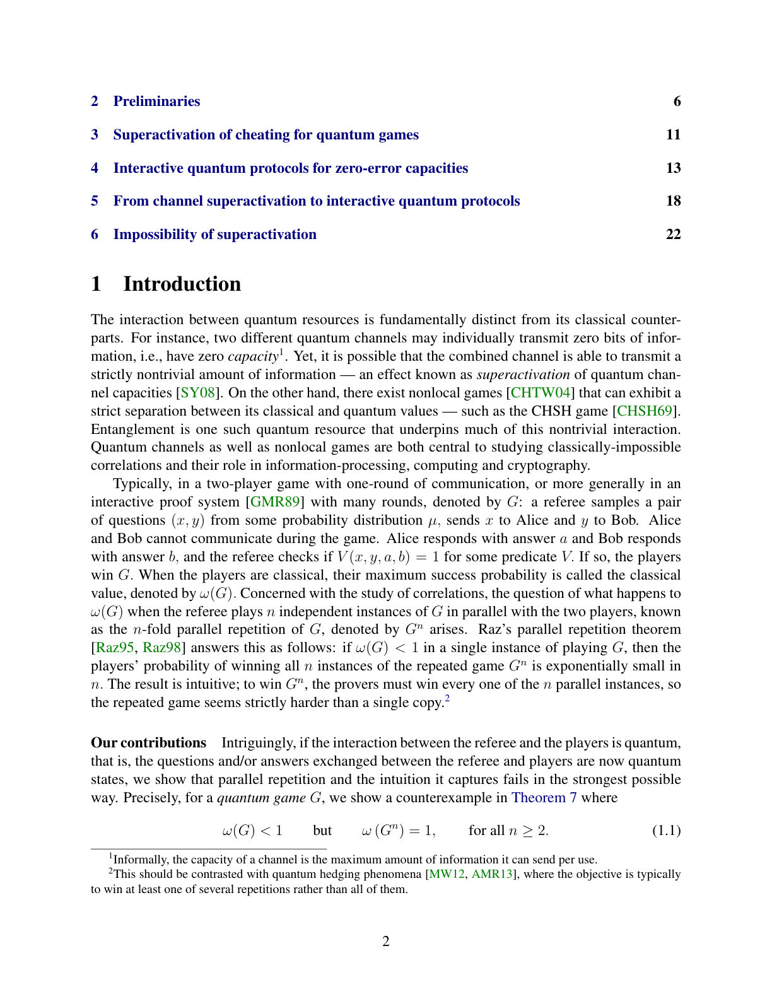
<figcaption class="paper-figure-caption"><b>Fig 1.</b> Low-resolution page preview, page 2</figcaption>
</figure>
<figure class="paper-figure-card">
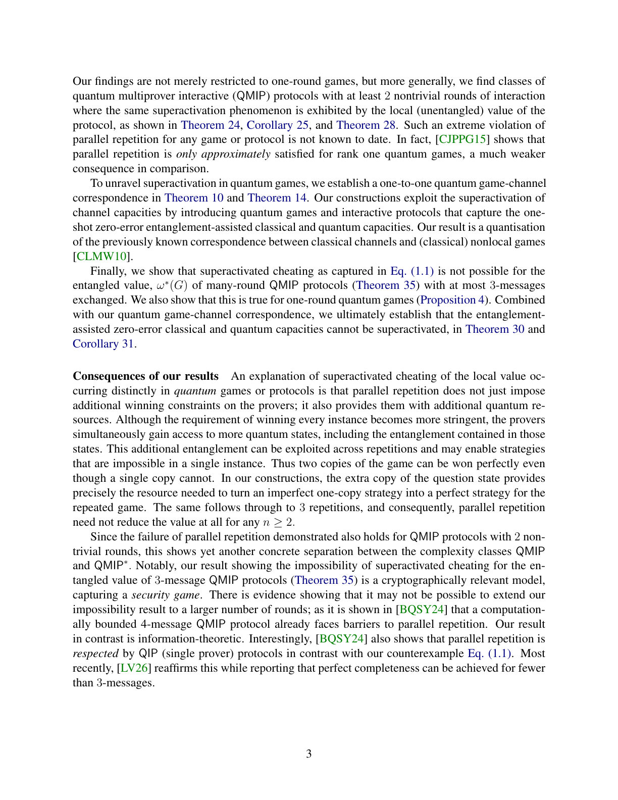
<figcaption class="paper-figure-caption"><b>Fig 2.</b> Low-resolution page preview, page 3</figcaption>
</figure>
<figure class="paper-figure-card">
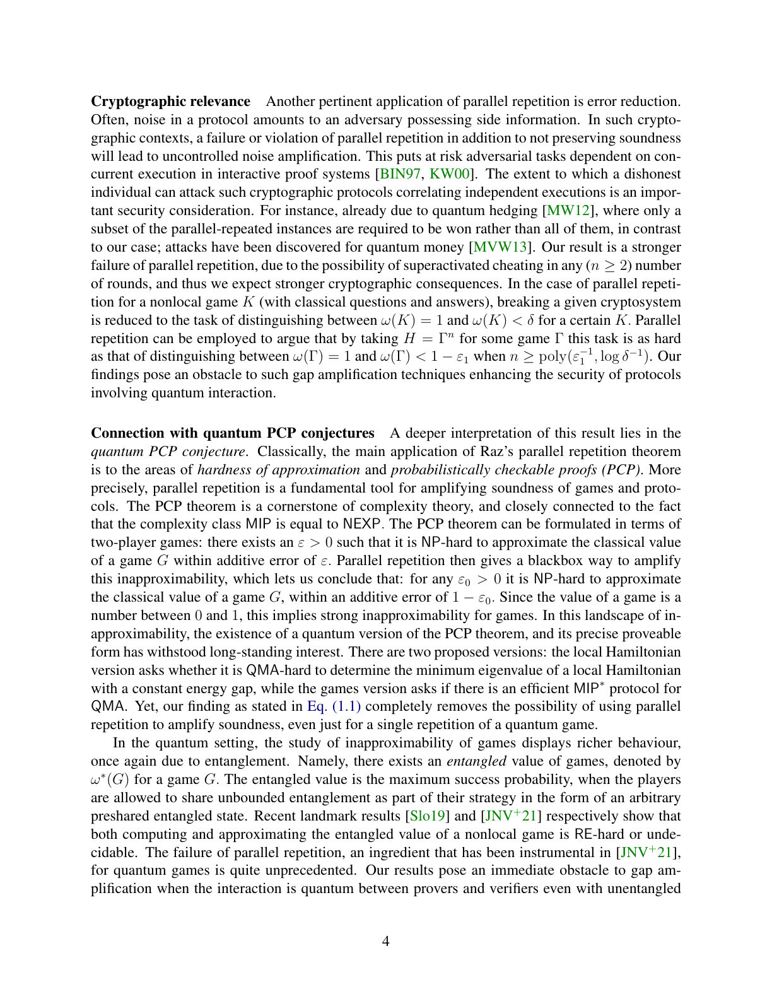
<figcaption class="paper-figure-caption"><b>Fig 3.</b> Low-resolution page preview, page 4</figcaption>
</figure>
<figure class="paper-figure-card">
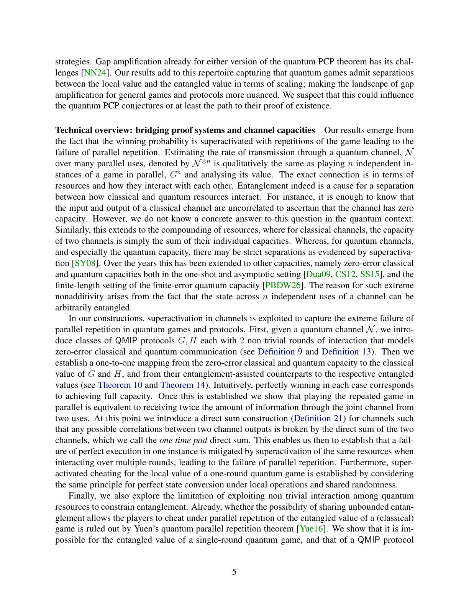
<figcaption class="paper-figure-caption"><b>Fig 4.</b> Low-resolution page preview, page 5</figcaption>
</figure>
<figure class="paper-figure-card">
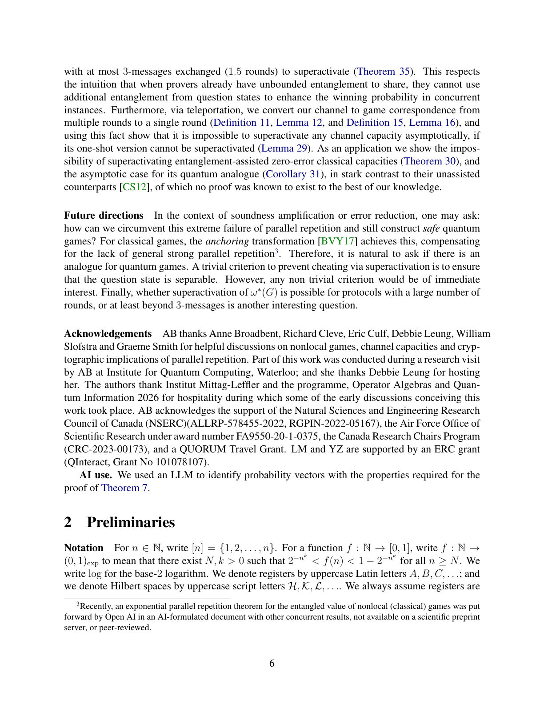
<figcaption class="paper-figure-caption"><b>Fig 5.</b> Low-resolution page preview, page 6</figcaption>
</figure>
</div>
<p><strong>Summary.</strong> This paper explores the counterintuitive phenomenon of 'superactivation' in quantum interactive proof systems, showing that quantum communication can cause the cheating probability to increase dramatically upon parallel repetition. The authors prove that while the single-shot cheating value can be low, repeating the game multiple times forces the cheating probability to one. This work has significant implications for quantum complexity theory and the security analysis of quantum protocols.</p>
<p><strong>Why it may be interesting.</strong> The finding that quantum resources can be 'superactivated' by repetition challenges standard assumptions about error amplification in quantum protocols, which is a core topic in quantum information theory.</p>
<details>
<summary>Detailed structure</summary>
<p><strong>Main problem.</strong> The paper investigates how quantum communication affects the soundness error of interactive multiprover games (QMIP) under parallel repetition, contrasting this with classical results.</p>
<p><strong>Main result.</strong> The authors demonstrate that quantum communication can cause 'superactivation' of cheating, where the cheating probability increases from a value less than one for a single instance to exactly one under parallel repetition.</p>
<p><strong>Method.</strong> The work establishes a correspondence between quantum games and quantum channels, using techniques like teleportation-based reductions and analyzing the behavior of zero-error capacities.</p>
<p><strong>Model / system.</strong> The model involves quantum interactive proof systems (QMIP) and quantum channels, analyzing the success probability of cheating provers (the 'value' of the game).</p>
<p><strong>Key observables.</strong> The local value $\omega(G)$ versus the parallel repetition value $\omega(G^n)$, and the zero-error classical/quantum capacities ($C_0, Q_0$).</p>
<p><strong>Important parameters / regimes.</strong> The number of parallel repetitions ($n$), and the number of messages exchanged (limited to 3 for certain impossibility results).</p>
<p><strong>Assumptions / limitations.</strong> The impossibility results for entangled values are shown only for a limited number of messages (at most 3), and the analysis relies on establishing specific orthogonality relations.</p>
<p><strong>Paper structure.</strong> The paper builds by first contrasting classical and quantum parallel repetition effects, then introducing the quantum game-channel correspondence, proving the superactivation phenomenon for the local value, and finally proving the impossibility of superactivation for the entangled value under certain constraints.</p>
</details>
<details>
<summary>Abstract</summary>
<p>We study interactive multiprover games and many-round protocols in which the communication between the verifier and the provers is quantum. Parallel repetition is known to suppress soundness error of classical two-prover games arbitrarily close to zero, as shown by Raz (STOC '95), even with quantum strategies as shown by Yuen (ICALP '16), and Bavarian, Vidick and Yuen (STOC '17). Yet, we show that quantum communication can have the opposite, unexpected effect. Specifically, we exhibit a one-round quantum game and two-round $\mathsf{QMIP}$ protocols whose local (unentangled) value is strictly less than one for a single instance, yet equals one under $n$-fold parallel repetition for every $n \geq 2$. The key is that parallel repetition not only imposes additional winning conditions but also supplies additional quantum resources as entanglement in the exchanged states can be exploited jointly across copies.   Our multiround examples build on superactivation of zero-error capacities of quantum channels. To establish this connection, we introduce quantum games and interactive protocols which capture the one-shot zero-error classical and quantum capacities, both with and without entanglement assistance. Our constructions use quantum-state verification and a teleportation-based reduction from two rounds to one.   In contrast, when shared entanglement is allowed, we show that parallel repetition cannot increase the entangled value when at most $3$ messages are exchanged, consistent with classical results of Bellare, Impagliazzo and Naor (FOCS '97), and that of single-prover systems by Kitaev and Watrous (STOC '00). Combining this monotonicity with our quantum game-channel correspondence, we show that entanglement-assisted zero-error classical and quantum capacities cannot be superactivated.</p>
</details>
<p><sub><a href="#top">↑ back to top</a></sub></p>

<p><a id="paper-2609.30944"></a></p>
<h3 id="representation-aware-transport-information-measure-for-non-inclusive-discrete-supports"><a href="http://arxiv.org/abs/2609.30944v1">Representation-Aware Transport-Information Measure for Non-inclusive Discrete Supports</a></h3>
<p><strong>Authors:</strong> Koretaka Yuge<br>
<strong>Type:</strong> theory · <strong>Category:</strong> statistical mechanics · <strong>PDF:</strong> <a href="https://arxiv.org/pdf/2609.30944v1">https://arxiv.org/pdf/2609.30944v1</a><br>
<strong>Analysis basis:</strong> full PDF text, analyzed in chunks</p>
<div class="figure-strip-hint">↔ Scroll figures horizontally</div>
<div class="paper-figures-scroll">
<figure class="paper-figure-card">
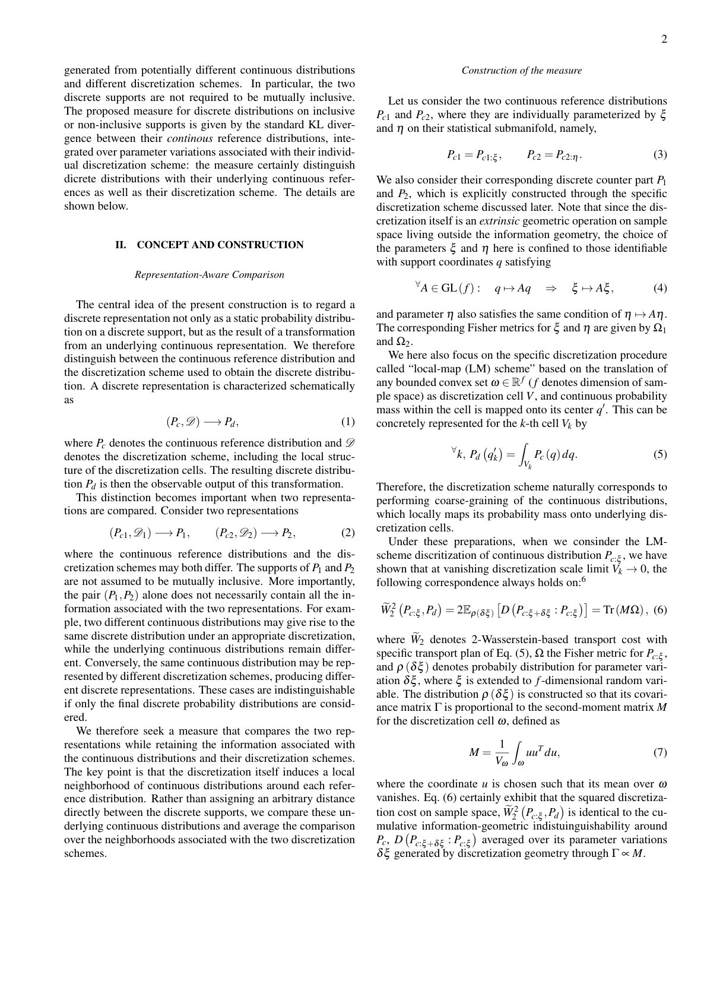
<figcaption class="paper-figure-caption"><b>Fig 1.</b> Low-resolution page preview, page 2</figcaption>
</figure>
<figure class="paper-figure-card">
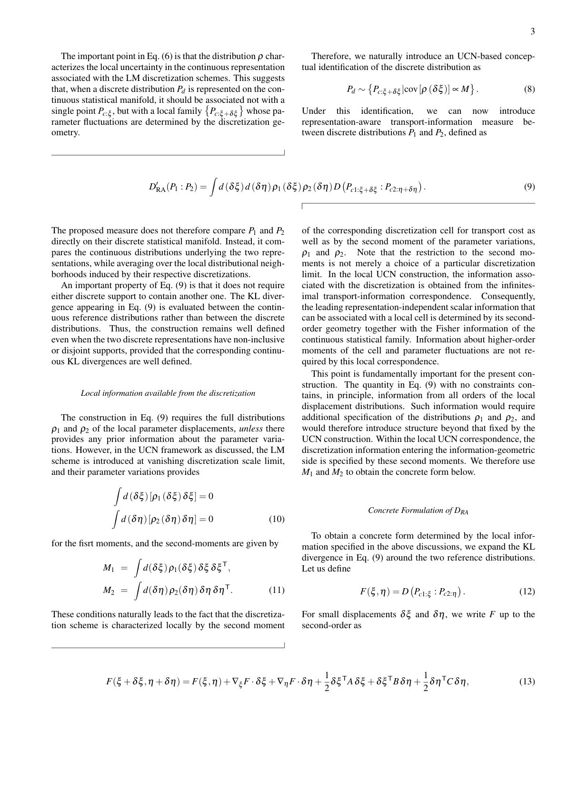
<figcaption class="paper-figure-caption"><b>Fig 2.</b> Low-resolution page preview, page 3</figcaption>
</figure>
<figure class="paper-figure-card">
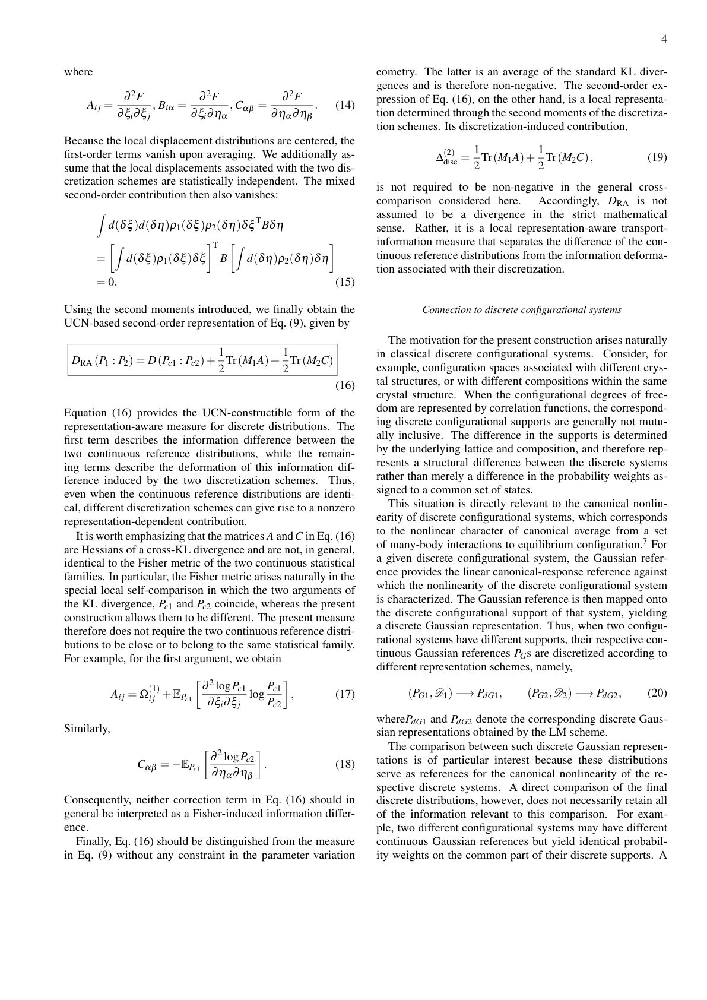
<figcaption class="paper-figure-caption"><b>Fig 3.</b> Low-resolution page preview, page 4</figcaption>
</figure>
<figure class="paper-figure-card">
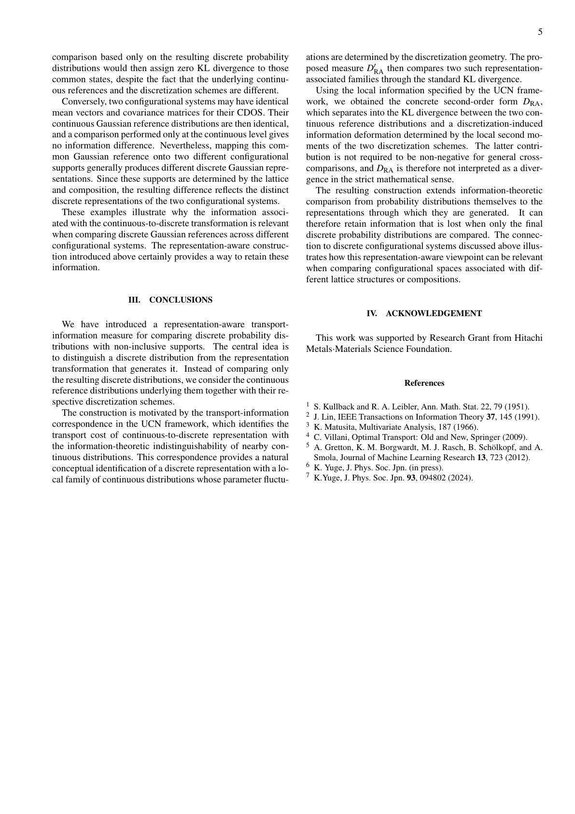
<figcaption class="paper-figure-caption"><b>Fig 4.</b> Low-resolution page preview, page 5</figcaption>
</figure>
</div>
<p><strong>Summary.</strong> This work develops a sophisticated information-theoretic measure to compare discrete probability distributions whose supports may not overlap. It achieves this by moving beyond comparing only the final discrete states, instead incorporating information about the continuous distributions and the specific discretization processes used to generate them. This provides a powerful tool for analyzing physical systems where the underlying continuous physics is more informative than the resulting coarse-grained data.</p>
<p><strong>Why it may be interesting.</strong> While the core topic is information geometry, the rigorous mathematical framework connecting extrinsic geometric operations (discretization) to intrinsic information metrics is highly relevant for developing robust comparison tools in complex many-body systems where approximations or coarse-graining are inevitable.</p>
<details>
<summary>Detailed structure</summary>
<p><strong>Main problem.</strong> The paper addresses the challenge of comparing discrete probability distributions, particularly when their supports are non-inclusive, while retaining crucial information about the underlying continuous distributions and the discretization schemes used to generate them.</p>
<p><strong>Main result.</strong> A novel representation-aware transport-information measure ($D_{RA}$) is introduced that successfully quantifies the difference between two discrete distributions by combining the divergence between their continuous references with a term quantifying the information deformation caused by their respective discretization processes.</p>
<p><strong>Method.</strong> The measure is formulated using the framework of unavoidable canonical nonlinearity (UCN), linking the 2-Wasserstein transport cost of discretization to the information-geometric indistinguishability of nearby continuous distributions.</p>
<p><strong>Model / system.</strong> The theory is applied to general comparison of probability distributions, finding relevance in physical systems like configurational degrees of freedom (e.g., crystal structures) where the resulting discrete supports may be non-inclusive.</p>
<p><strong>Key observables.</strong> The representation-aware transport-information measure ($D_{RA}$), the 2-Wasserstein-based transport cost ($    ext{eW}^2/2$), and the local information deformation terms ($  ext{Tr}(M_1A) +     ext{Tr}(M_2C)$).</p>
<p><strong>Important parameters / regimes.</strong> The continuous reference distributions ($P_{c1}, P_{c2}$), the discretization schemes ($D_1, D_2$), and the vanishing discretization scale limit ($ ext{V}_k 
ightarrow 0$).</p>
<p><strong>Assumptions / limitations.</strong> The derivation assumes the local-map (LM) scheme for discretization and relies on the local UCN correspondence, which equates the discretization cost to the information-geometric indistinguishability at the leading order.</p>
<p><strong>Paper structure.</strong> The paper first establishes the limitations of standard information measures for non-inclusive supports. It then introduces the UCN framework to relate discretization geometry to information geometry. Finally, it derives and presents the concrete, second-order form of the representation-aware measure, separating the continuous difference from the discretization-induced deformation.</p>
</details>
<details>
<summary>Abstract</summary>
<p>Information-theoretic measures for comparing probability distributions are widely used across physics and other fields. When two discrete distributions have non-inclusive supports, however, the Kullback-Leibler (KL) divergence is in general not directly applicable, and various alternative divergences and distances have been introduced. These measures compare the resulting distributions themselves, but do not generally retain information about the representation transformations by which the discrete distributions are generated from underlying continuous ones. Here we introduce a representation-aware transport-information measure for discrete distributions with non-inclusive supports, formulated based on the standard KL divergence. We consider two continuous reference distributions, each transformed into a discrete representation through its own discretization scheme. Rather than comparing only the resulting discrete distributions or their continuous references, we additionally retain local information associated with the representation-change schemes. The resulting measure can therefore distinguish discrete representations that may have identical discrete probability landscapes but originate from different continuous references or discretization schemes. The construction is based on the transport-information cost of continuous-to-discrete representation in the framework of unavoidable canonical nonlinearity (UCN). UCN provides a non-arbitrary correspondence between the transport cost of discretization as an extrinsic geometric operation and the information-theoretic indistinguishability of nearby continuous distributions, thereby allowing a discrete representation to be associated with a local family of underlying continuous distributions on the statistical manifold.</p>
</details>
<p><sub><a href="#top">↑ back to top</a></sub></p>

<p><a id="paper-2609.31350"></a></p>
<h3 id="sharp-data-processing-region-for-quantum-conditional-renyi-entropies"><a href="http://arxiv.org/abs/2609.31350v1">Sharp Data-Processing Region for Quantum Conditional Rényi Entropies</a></h3>
<p><strong>Authors:</strong> Milad M. Goodarzi, Yucheng Bao, Marco Tomamichel<br>
<strong>Type:</strong> theory · <strong>Category:</strong> quantum information and computing · <strong>PDF:</strong> <a href="https://arxiv.org/pdf/2609.31350v1">https://arxiv.org/pdf/2609.31350v1</a><br>
<strong>Analysis basis:</strong> full PDF text, analyzed in chunks</p>
<div class="figure-strip-hint">↔ Scroll figures horizontally</div>
<div class="paper-figures-scroll">
<figure class="paper-figure-card">
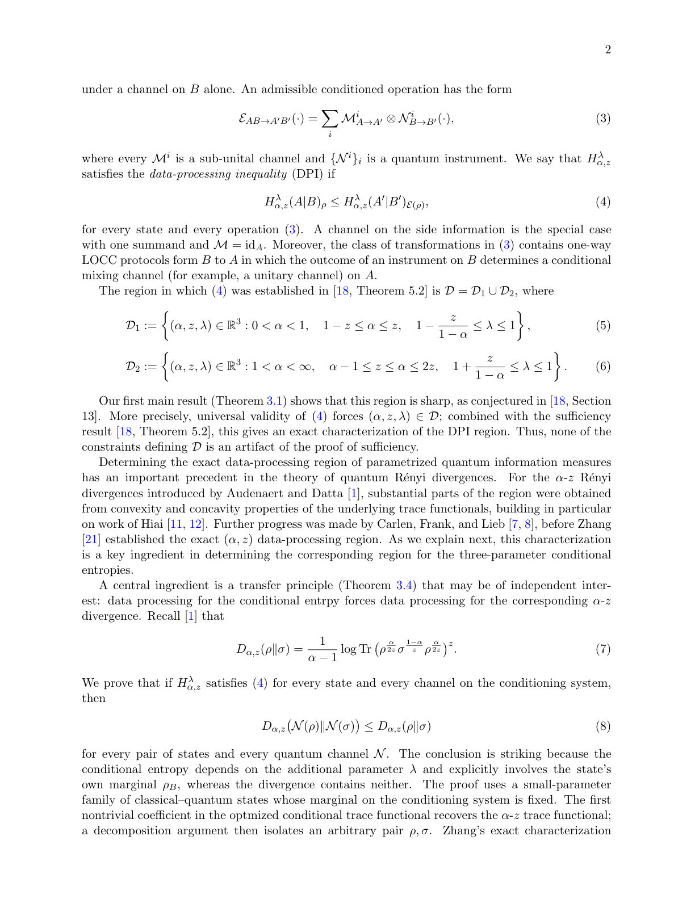
<figcaption class="paper-figure-caption"><b>Fig 1.</b> Low-resolution page preview, page 2</figcaption>
</figure>
<figure class="paper-figure-card">
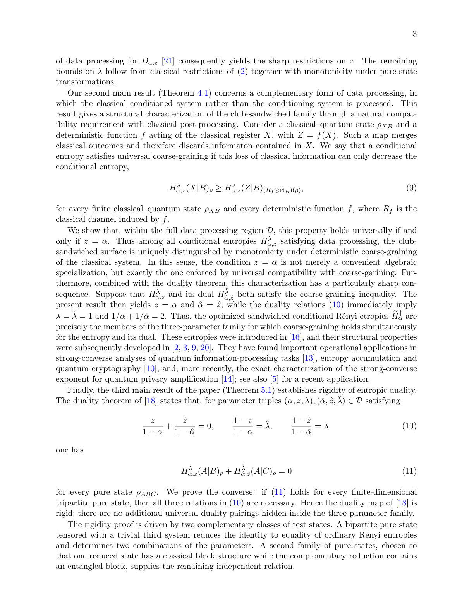
<figcaption class="paper-figure-caption"><b>Fig 2.</b> Low-resolution page preview, page 3</figcaption>
</figure>
<figure class="paper-figure-card">
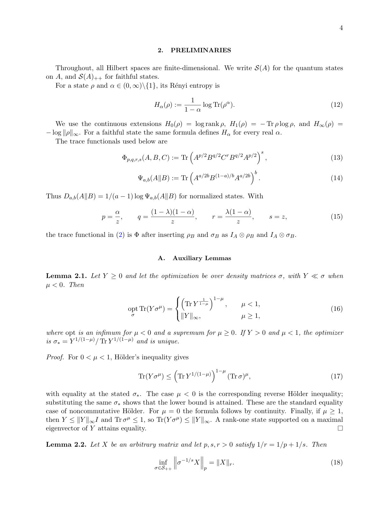
<figcaption class="paper-figure-caption"><b>Fig 3.</b> Low-resolution page preview, page 4</figcaption>
</figure>
<figure class="paper-figure-card">
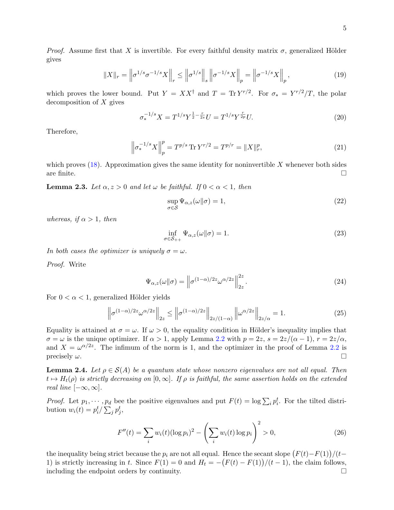
<figcaption class="paper-figure-caption"><b>Fig 4.</b> Low-resolution page preview, page 5</figcaption>
</figure>
<figure class="paper-figure-card">
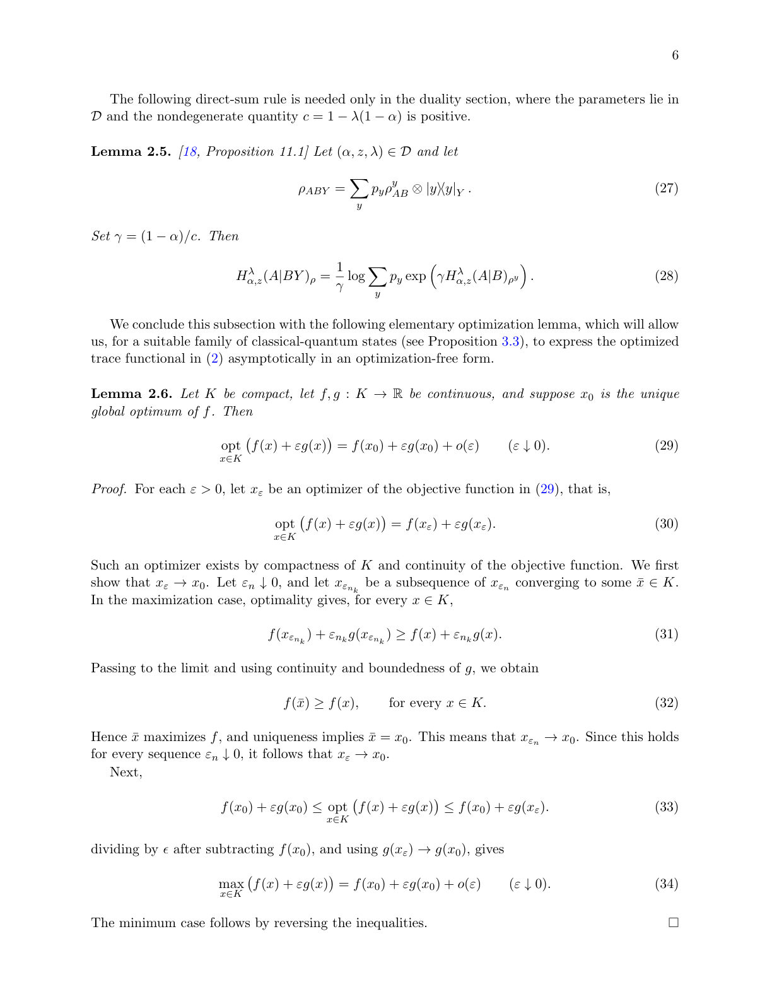
<figcaption class="paper-figure-caption"><b>Fig 5.</b> Low-resolution page preview, page 6</figcaption>
</figure>
</div>
<p><strong>Summary.</strong> This paper provides a comprehensive mathematical characterization of the data-processing properties for a generalized family of quantum conditional Rényi entropies. By proving the sharpness of the data-processing region and deriving necessary conditions from universal monotonicity and entropic duality, the authors uniquely determine the structural constraints on these entropy measures. This work solidifies the mathematical understanding of information flow in quantum systems.</p>
<p><strong>Why it may be interesting.</strong> The rigorous characterization of fundamental information-theoretic quantities like conditional entropy and their associated inequalities provides deep structural insights into quantum correlations, which underpins quantum computation theory.</p>
<details>
<summary>Detailed structure</summary>
<p><strong>Main problem.</strong> The paper aims to characterize the data-processing region, the club-sandwiched subfamily, and the entropic duality for a three-parameter family of quantum conditional Rényi entropies.</p>
<p><strong>Main result.</strong> It proves that the data-processing region is sharp, that universal monotonicity under coarse-graining forces the parameter $z$ to equal $\alpha$, and that the entropic duality relations are rigid.</p>
<p><strong>Method.</strong> The analysis uses rigorous mathematical proofs involving the application of specific test states (e.g., pure states, quantum-classical marginals) to derive necessary and sufficient conditions for various inequalities to hold.</p>
<p><strong>Model / system.</strong> The study focuses on the generalized quantum conditional Rényi entropy, $H_{\lambda}^{\alpha, z}(A|B)
ho$, defined for bipartite quantum states $
ho_{AB}$ in finite-dimensional Hilbert spaces.</p>
<p><strong>Key observables.</strong> Quantum conditional Rényi entropies ($H_{\lambda}^{\alpha, z}$), the data-processing inequality (DPI), and the entropic duality relation.</p>
<p><strong>Important parameters / regimes.</strong> The entropy depends on three parameters: $\alpha &gt; 0, \alpha 
eq 1$, $z > 0$, and $\lambda \in \mathbb{R}$.</p>
<p><strong>Assumptions / limitations.</strong> The analysis assumes finite-dimensional Hilbert spaces and relies on testing the functional against specific classes of pure and mixed states to constrain the parameters.</p>
<p><strong>Paper structure.</strong> The paper proceeds by first establishing the sharpness of the DPI region using various test states, then uses the condition of universal coarse-graining monotonicity to constrain the parameters, and finally uses the duality relation to uniquely characterize the entire structure.</p>
</details>
<details>
<summary>Abstract</summary>
<p>We study the three-parameter family of quantum conditional Rényi entropies $H_{α,z}^λ$ introduced in \textit{Commun. Math. Phys.} 407, 180 (2026). We prove that the previously established data-processing region is sharp. We then characterize the club-sandwiched family through a classical coarse-graining principle: within the full data-processing region, universal monotonicity under deterministic coarse-graining of the classical conditioned register holds if and only if $z = α$. Finally, we establish rigidity of entropic duality by showing that any universal duality relation for finite-dimensional tripartite pure states must satisfy the known parameter relations. Thus, the data-processing region, the club-sandwiched subfamily, and the duality transformation are each uniquely characterized by their respective universal properties.</p>
</details>
<p><sub><a href="#top">↑ back to top</a></sub></p>

<p><a id="paper-2609.31097"></a></p>
<h3 id="supporting-functionals-and-singular-boundary-geometry-of-two-qubit-entanglement-of-formation"><a href="http://arxiv.org/abs/2609.31097v1">Supporting functionals and singular boundary geometry of two-qubit entanglement of formation</a></h3>
<p><strong>Authors:</strong> Wei Song, Xiao-Lan Zong<br>
<strong>Type:</strong> theory · <strong>Category:</strong> quantum information and computing · <strong>PDF:</strong> <a href="https://arxiv.org/pdf/2609.31097v1">https://arxiv.org/pdf/2609.31097v1</a><br>
<strong>Analysis basis:</strong> full PDF text, analyzed in chunks</p>
<div class="figure-strip-hint">↔ Scroll figures horizontally</div>
<div class="paper-figures-scroll">
<figure class="paper-figure-card">
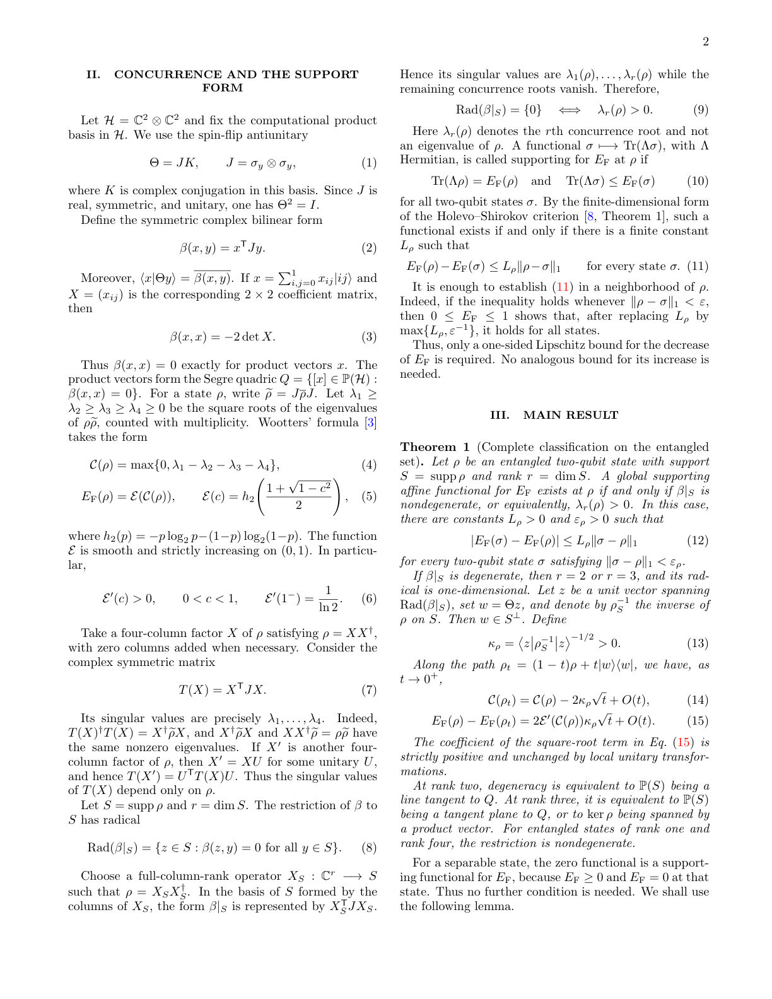
<figcaption class="paper-figure-caption"><b>Fig 1.</b> Low-resolution page preview, page 2</figcaption>
</figure>
<figure class="paper-figure-card">
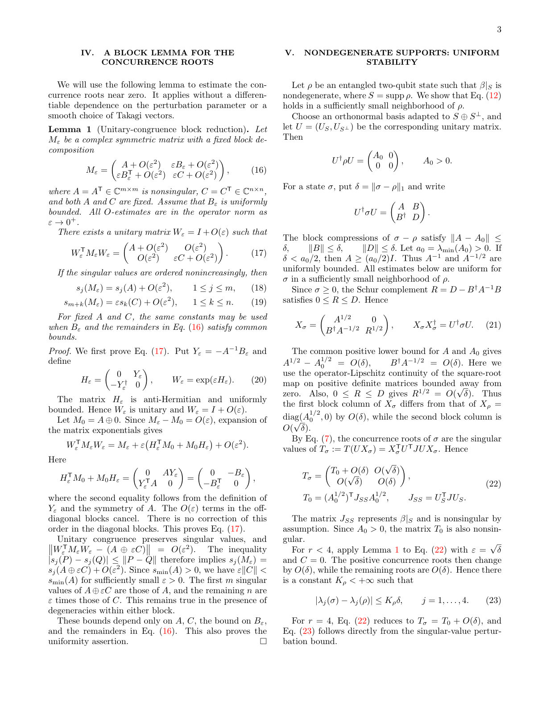
<figcaption class="paper-figure-caption"><b>Fig 2.</b> Low-resolution page preview, page 3</figcaption>
</figure>
<figure class="paper-figure-card">
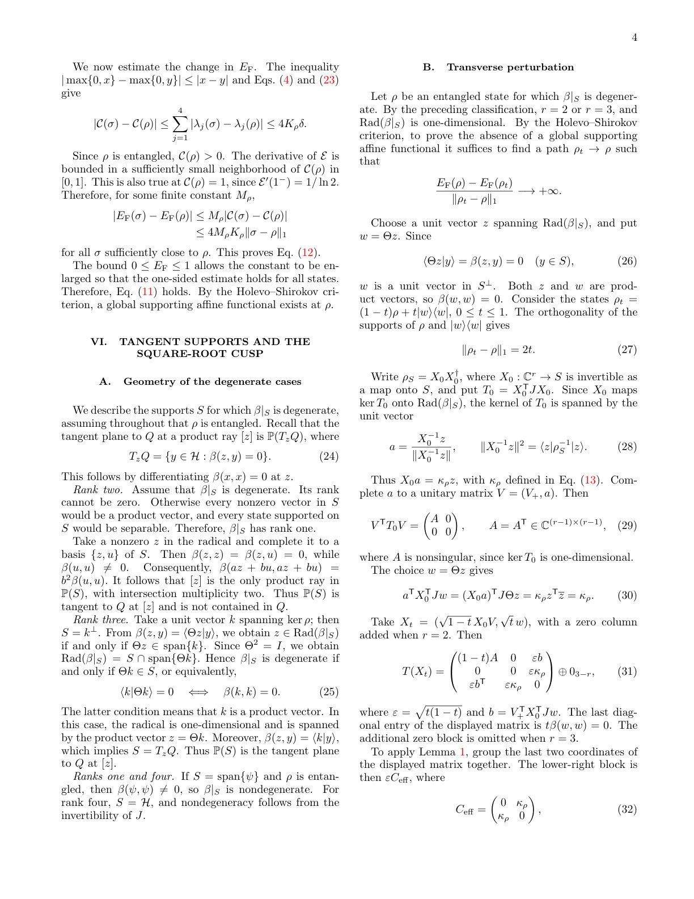
<figcaption class="paper-figure-caption"><b>Fig 3.</b> Low-resolution page preview, page 4</figcaption>
</figure>
<figure class="paper-figure-card">
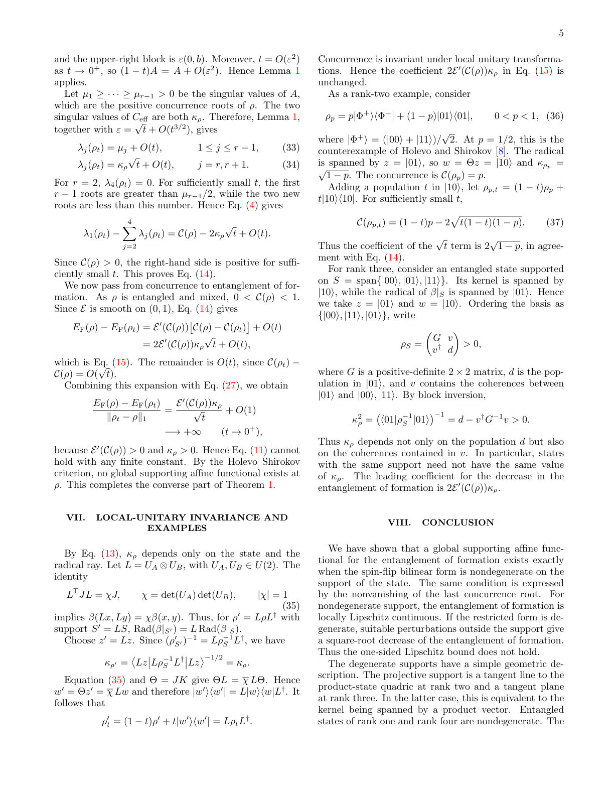
<figcaption class="paper-figure-caption"><b>Fig 4.</b> Low-resolution page preview, page 5</figcaption>
</figure>
<figure class="paper-figure-card">

<figcaption class="paper-figure-caption"><b>Fig 5.</b> Low-resolution page preview, page 6</figcaption>
</figure>
</div>
<p><strong>Summary.</strong> This theoretical paper provides a precise mathematical criterion for determining if the entanglement of formation ($   ext{EF}$) for a two-qubit state possesses a global supporting affine functional. The existence hinges on the nondegeneracy of the state's support with respect to the spin-flip bilinear form. Failure of this condition leads to a characteristic square-root decay of $   ext{EF}$ under perturbation, demonstrating a fundamental limitation in the measure's global differentiability.</p>
<p><strong>Why it may be interesting.</strong> The rigorous mathematical characterization of when entanglement measures are well-behaved under small perturbations is crucial for developing robust quantum information protocols and understanding the boundaries of quantum correlations.</p>
<details>
<summary>Detailed structure</summary>
<p><strong>Main problem.</strong> The paper aims to establish necessary and sufficient conditions for the existence of a global supporting affine functional for the entanglement of formation ($   ext{EF}$) for an entangled two-qubit state.</p>
<p><strong>Main result.</strong> A global supporting affine functional exists if and only if the spin-flip bilinear form restricted to the state's support is nondegenerate. In the degenerate case, $  ext{EF}$ decreases as the square root of the mixing parameter, violating the required bound.</p>
<p><strong>Method.</strong> The analysis combines mathematical criteria involving the nondegeneracy of the spin-flip bilinear form with perturbation theory applied to the $    ext{EF}$ functional along specific paths.</p>
<p><strong>Model / system.</strong> The study focuses on two-qubit quantum systems, characterized by density matrices $
ho$. The mathematical tools involve the concurrence, the spin-flip bilinear form ($eta$), and the state's support ($S$).</p>
<p><strong>Key observables.</strong> Entanglement of Formation ($   ext{EF}$), Concurrence ($C$), Spin-flip bilinear form ($eta$), and Concurrence roots ($\lambda_i$).</p>
<p><strong>Important parameters / regimes.</strong> The degeneracy of $eta|_S$ (nondegenerate vs. rank two/three), and the small perturbation parameter $t$ or $\epsilon$.</p>
<p><strong>Assumptions / limitations.</strong> The analysis assumes the state $
ho$ is entangled and relies on local Lipschitz continuity established for nondegenerate supports.</p>
<p><strong>Figures summary.</strong> Not specified in the provided notes.</p>
<p><strong>Paper structure.</strong> The paper establishes the mathematical criterion for the supporting functional's existence, analyzes the nondegenerate case where local Lipschitz continuity holds, and then investigates the degenerate case using perturbation analysis to show the failure of the global bound.</p>
</details>
<details>
<summary>Abstract</summary>
<p>We give a criterion for the existence of a global supporting affine functional for the entanglement of formation at an entangled two-qubit state. It exists if and only if the spin-flip bilinear form is nondegenerate on the support of the state, or equivalently, if the last concurrence root associated with the support is nonzero. In this case the entanglement of formation is locally Lipschitz continuous. In the degenerate case the state has rank two or three, and its projective support is tangent to the product-state quadric. For suitable perturbations outside the support, the entanglement of formation decreases as the square root of the mixing parameter. The leading term is obtained explicitly. This square-root decrease violates the one-sided Lipschitz bound required for a global supporting affine functional.</p>
</details>
<p><sub><a href="#top">↑ back to top</a></sub></p>

<p><a id="paper-2609.30871"></a></p>
<h3 id="systematic-evolution-of-magnetic-anisotropy-and-crystal-electric-field-ground-states-in-smtr2ge2"><a href="http://arxiv.org/abs/2609.30871v1">Systematic Evolution of Magnetic Anisotropy and Crystal-electric-field Ground States in SmTr2Ge2</a></h3>
<p><strong>Authors:</strong> Ryuji Higashinaka, Kokoro Higo, Tatsuma D. Matsuda, Yuji Aoki<br>
<strong>Type:</strong> experiment · <strong>Category:</strong> strongly correlated electrons · <strong>PDF:</strong> <a href="https://arxiv.org/pdf/2609.30871v1">https://arxiv.org/pdf/2609.30871v1</a><br>
<strong>Analysis basis:</strong> full PDF text, analyzed in chunks</p>
<div class="figure-strip-hint">↔ Scroll figures horizontally</div>
<div class="paper-figures-scroll">
<figure class="paper-figure-card">
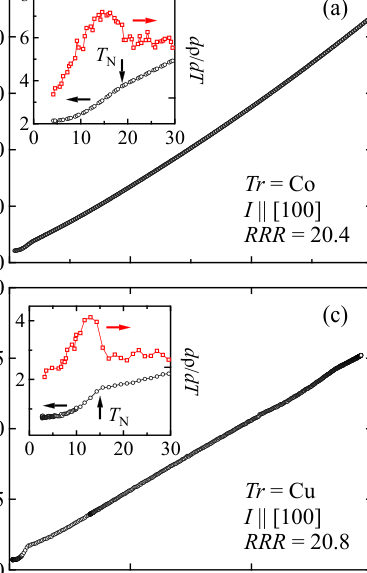
<figcaption class="paper-figure-caption"><b>Fig 1.</b> Fig. 1.</figcaption>
</figure>
<figure class="paper-figure-card">
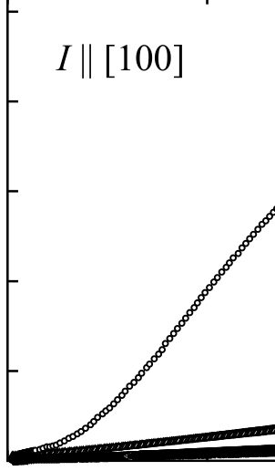
<figcaption class="paper-figure-caption"><b>Fig 2.</b> Fig. 2.</figcaption>
</figure>
<figure class="paper-figure-card">
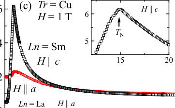
<figcaption class="paper-figure-caption"><b>Fig 3.</b> Fig. 3.</figcaption>
</figure>
<figure class="paper-figure-card">
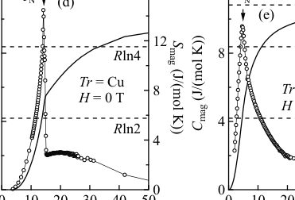
<figcaption class="paper-figure-caption"><b>Fig 4.</b> Fig. 4.</figcaption>
</figure>
<figure class="paper-figure-card">
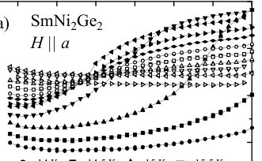
<figcaption class="paper-figure-caption"><b>Fig 5.</b> Fig. 6.</figcaption>
</figure>
</div>
<p><strong>Summary.</strong> This work experimentally investigates how the magnetic anisotropy and Crystal-Electric-Field (CEF) ground states evolve across the $   ext{SmTr}_2 ext{Ge}_2$ series by varying the transition metal $ ext{Tr}$. By measuring magnetization, specific heat, and susceptibility, the authors demonstrate a clear transition in magnetic behavior linked to the underlying CEF state and the local structural environment around the $   ext{Sm}$ ion.</p>
<p><strong>Why it may be interesting.</strong> The systematic tuning of magnetic anisotropy via ligand environment (changing $  ext{Tr}$) provides a clear experimental platform to study how crystal fields dictate the low-energy magnetic excitations in $4f$ electron systems.</p>
<details>
<summary>Detailed structure</summary>
<p><strong>Main problem.</strong> To systematically investigate the evolution of magnetic anisotropy and crystal-electric-field (CEF) ground states in the $    ext{SmTr}_2 ext{Ge}_2$ series.</p>
<p><strong>Main result.</strong> The magnetic anisotropy systematically changes from easy $ab$ plane ($  ext{Co},    ext{Ni}$) to easy $c$ axis ($   ext{Cu},    ext{Ag}$), correlating with the evolution of the CEF ground state and local structural parameters.</p>
<p><strong>Method.</strong> Measurements include magnetization, specific heat, and magnetic susceptibility ($\chi$) as a function of temperature and applied field, complemented by structural analysis.</p>
<p><strong>Model / system.</strong> The study focuses on the $  ext{SmTr}_2 ext{Ge}_2$ compounds ($ ext{Tr} =   ext{Co},    ext{Ni},    ext{Cu},    ext{Ag}$) with the $    ext{ThCr}_2 ext{Si}_2$-type structure, where magnetism originates from the $    ext{Sm}^{3+}$ $4f$ electrons.</p>
<p><strong>Key observables.</strong> Magnetic anisotropy (easy plane vs. easy axis), CEF ground state evolution, magnetic entropy, and resistivity ($
ho(T)$) changes below $T_N$.</p>
<p><strong>Important parameters / regimes.</strong> Transition metal identity ($    ext{Tr}$), applied magnetic field ($H=1   ext{ T}$), and temperature ($T$).</p>
<p><strong>Assumptions / limitations.</strong> The analysis uses $  ext{La}$ nonmagnetic analogs to isolate the $   ext{Sm}$ contribution to magnetic susceptibility and specific heat.</p>
<p><strong>Figures summary.</strong> Figures show $
ho(T)$ vs $T$ for various $ ext{Tr}$ elements, $\chi(T)$ vs $T$ for $H \parallel a$ and $H \parallel c$, and $C_p$ vs $T$ data used to track magnetic entropy evolution.</p>
<p><strong>Paper structure.</strong> The paper systematically analyzes magnetic measurements ($\chi, C_p, M$) across the $ ext{Tr}$ series, correlating the observed changes in magnetic anisotropy and CEF ground state with the local structural environment determined by X-ray measurements.</p>
</details>
<details>
<summary>Abstract</summary>
<p>We investigated the crystal-electric-field (CEF) states in SmTr2Ge2 (Tr= Co-Cu and Ag) with the ThCr2Si2-type structure by magnetization and specific heat measurements. The magnetic anisotropy evolves systematically with Tr, changing from an easy ab plane for Tr = Co and Ni to an easy c axis for Tr = Cu and Ag. Combined analyses of the low-temperature susceptibility and magnetic entropy indicate a level crossing of the CEF ground state between Ni and Cu, together with a systematic evolution of the first excited CEF energy. The evolution of the magnetic properties correlates with changes in local structural parameters, providing an experimental basis for discussing how the ligand environment around the Sm ion is related to the 4f electronic state.</p>
</details>
<p><sub><a href="#top">↑ back to top</a></sub></p>
</details>
<h2 id="secondary-cond-mat-archives">Secondary cond-mat archives</h2>
<p><em>Papers from cond-mat.mtrl-sci, mes-hall, other, soft, supr-con. These archives are de-prioritized — they appear at the end regardless of relevance score.</em></p>
<h3 id="relevant-in-secondary-archives-14">Relevant in secondary archives (14)</h3>

<p><a id="paper-2609.31254"></a></p>
<h3 id="a-general-non-markovian-electronic-friction-and-langevin-dynamics-framework-for-nonequilibrium-systems"><a href="http://arxiv.org/abs/2609.31254v1">A General Non-Markovian Electronic Friction and Langevin Dynamics Framework for Nonequilibrium Systems</a></h3>
<p><strong>Authors:</strong> S. L. Rudge, R. J. Preston, D. S. Kosov, M. Thoss<br>
<strong>Type:</strong> theory · <strong>Category:</strong> statistical mechanics · <strong>PDF:</strong> <a href="https://arxiv.org/pdf/2609.31254v1">https://arxiv.org/pdf/2609.31254v1</a><br>
<strong>Analysis basis:</strong> full PDF text, analyzed in chunks
<strong>Topic relevance:</strong> 🔥 <code>methods for driven-dissipative</code> <strong>4/5</strong> · <code>Keldysh / 2PI / non-Gaussian methods</code> <strong>3/5</strong> · <code>driven-dissipative phase transition</code> <strong>2/5</strong> · <code>non-equilibrium universality</code> <strong>2/5</strong> · <code>quantum measurements</code> <strong>2/5</strong> · <code>Frenkel-Kontorova</code> <strong>1/5</strong> · <code>correlated / nonlocal dissipation</code> <strong>1/5</strong> · <code>scars &amp; prethermalization</code> <strong>1/5</strong></p>
<div class="figure-strip-hint">↔ Scroll figures horizontally</div>
<div class="paper-figures-scroll">
<figure class="paper-figure-card">
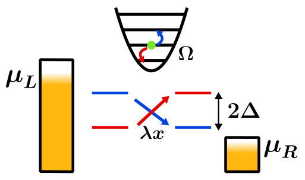
<figcaption class="paper-figure-caption"><b>Fig 1.</b> FIG. 1. Schematic of the vibrationally coupled donor- acceptor model. Two electronic energy configurations are shown: ∆&gt; 0 and ∆&lt; 0, which correspond to driving and dissipation of the harmonic vibrational mode, respectively.</figcaption>
</figure>
<figure class="paper-figure-card">
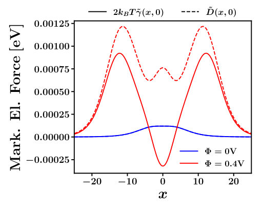
<figcaption class="paper-figure-caption"><b>Fig 2.</b> FIG. 2. Markovian electronic friction (solid lines) and correla- tion function of the stochastic force (dashed lines) plotted as a function of vibrational coordinate, x, and for two voltages: Φ = 0V (blue) and Φ = 0.4V (red). The electronic energies are chosen as ∆= 100meV and all other parameters are given in Tbl. I.</figcaption>
</figure>
<figure class="paper-figure-card">
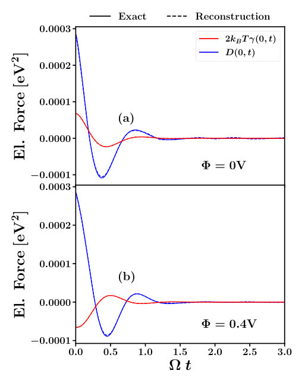
<figcaption class="paper-figure-caption"><b>Fig 3.</b> FIG. 4. Exact (solid) and reconstructed (dashed) time- dependent non-Markovian electronic forces at vibrational co- ordinate x = 0 and for voltages (a) Φ = 0V and (b) Φ = 0.4V. Parameters are the same as in Fig. 3. Nγ = 6 terms were used to represent γ(x, t), while ND = 20 terms were required for an accurate representation of D(x, t).</figcaption>
</figure>
<figure class="paper-figure-card">
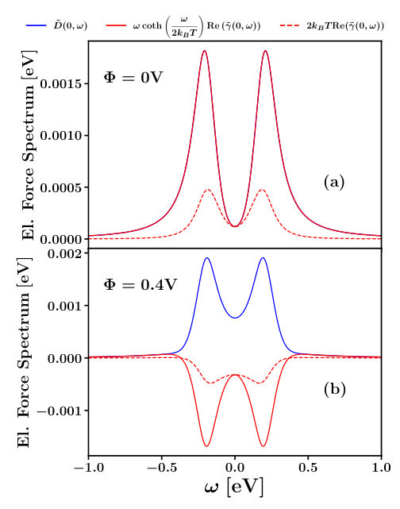
<figcaption class="paper-figure-caption"><b>Fig 4.</b> FIG. 3. Frequency spectrum of the non-Markovian electronic forces at vibrational coordinate x = 0 and for voltages (a) Φ = 0V and (b) Φ = 0.4V. The electronic energies are chosen as ∆= 100 meV. In order to compare to the correlation function of the stochastic force (blue), the electronic friction (red) has been scaled by the quantum (solid lines) and classical (dashed lines) fluctuation-dissipation theorem factors.</figcaption>
</figure>
<figure class="paper-figure-card">
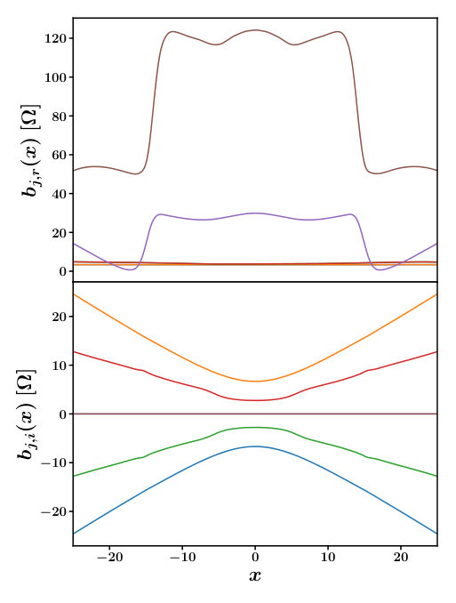
<figcaption class="paper-figure-caption"><b>Fig 5.</b> FIG. 5. Coordinate-dependent frequencies of the elec- tronic friction, bj(x), obtained by performing the pole- decomposition approach outlined in Sec. IV A to each vibra- tional coordinate at Φ = 0V. The varying colors denote the Nγ = 6 terms used in this pole decomposition. The frequen- cies are split into real (upper) and imaginary (lower) compo- nents.</figcaption>
</figure>
</div>

<p><strong>Summary.</strong> This paper introduces a general Non-Markovian Electronic Friction and Langevin Dynamics framework to simulate molecular dynamics coupled to metal leads. It demonstrates that retaining non-Markovian electronic memory effects is essential for accurately describing non-equilibrium charge transport and vibrational energy exchange. The method successfully reproduces exact quantum benchmarks where simpler Markovian approximations fail.</p>
<p><strong>Why it may be interesting.</strong> This work directly tackles open quantum systems dynamics by providing a rigorous, non-perturbative method to incorporate electronic memory effects into vibrational dynamics, which is crucial for understanding energy transfer in nanoscale devices.</p>
<details>
<summary>Detailed structure</summary>
<p><strong>Main problem.</strong> The paper addresses the challenge of accurately simulating the non-equilibrium vibronic dynamics of molecules coupled to metal surfaces, particularly when electronic memory effects are significant.</p>
<p><strong>Main result.</strong> The proposed Non-Markovian Electronic Friction and Langevin Dynamics (NM-EFLD) framework is shown to be significantly more accurate and robust than the conventional Markovian approximation, especially under finite bias conditions.</p>
<p><strong>Method.</strong> The authors develop a general framework utilizing a Markovian embedding scheme to sample coordinate-dependent quantum colored noise, allowing the simulation of non-Markovian electronic friction effects.</p>
<p><strong>Model / system.</strong> The model involves a molecule coupled to metal leads, described by a Hamiltonian decomposed into molecular, metal, and interaction terms. The demonstration uses a vibrationally coupled donor-acceptor nanojunction.</p>
<p><strong>Key observables.</strong> Nonequilibrium charge transport, steady-state vibrational excitation ($\langle N_{vib} 
angle_{ss}$), and the comparison of energy dissipation rates.</p>
<p><strong>Important parameters / regimes.</strong> Bias voltage ($\Phi$), temperature ($T$), and the relative importance of non-Markovian vs. Markovian electronic memory effects.</p>
<p><strong>Assumptions / limitations.</strong> The core assumption is that the Markovian approximation fails in non-equilibrium regimes where electronic memory is crucial; the method overcomes this by systematically decomposing memory kernels.</p>
<p><strong>Figures summary.</strong> Figures illustrate the comparison between NM-EFLD and HEOM benchmarks, showing the failure of the Markovian approach at high bias, and visualizing the dependence of friction and noise on vibrational coordinate and voltage.</p>
<p><strong>Paper structure.</strong> The paper progresses from defining the general Hamiltonian and the need for non-Markovian treatments, detailing the NM-EFLD equations, and finally presenting numerical results comparing the full non-Markovian approach against the Markovian limit and exact quantum benchmarks.</p>
</details>
<details>
<summary>Abstract</summary>
<p>We present a general framework for simulating the nonequilibrium vibronic dynamics of molecules interacting with metal surfaces, which utilizes non-Markovian electronic friction and the corresponding generalized Langevin equation. The method employs a Markovian embedding scheme to sample coordinate-dependent quantum colored noise, with the underlying memory kernels represented systematically by exponential decompositions obtained directly from the electronic forces. In doing so, the approach extends the widely used electronic friction and Langevin dynamics formalism beyond the conventional Markovian approximation while retaining the coordinate dependence of the electronic back-action. We demonstrate the method for nonequilibrium charge transport through a vibrationally coupled molecular junction, where comparisons with numerically exact hierarchical equations of motion simulations show that the non-Markovian formulation is both more accurate and more robust than its Markovian counterpart. In particular, we find that non-Markovian electronic forces play a decisive role in the nonequilibrium vibrational dynamics, stabilizing regimes in which the conventional Markovian approximation fails.</p>
</details>
<p><sub><a href="#top">↑ back to top</a></sub></p>

<p><a id="paper-2609.30522"></a></p>
<h3 id="energy-selective-control-of-noise-assisted-multipulsing-by-weak-optical-seeding-in-the-dissipative-soliton-resonance-regime"><a href="http://arxiv.org/abs/2609.30522v1">Energy-selective control of noise-assisted multipulsing by weak optical seeding in the dissipative-soliton-resonance regime</a></h3>
<p><strong>Authors:</strong> Vladimir L. Kalashnikov, Alexander Rudenkov, Evgeni Sorokin, Irina T. Sorokina<br>
<strong>Type:</strong> theory · <strong>Category:</strong> statistical mechanics · <strong>PDF:</strong> <a href="https://arxiv.org/pdf/2609.30522v1">https://arxiv.org/pdf/2609.30522v1</a><br>
<strong>Analysis basis:</strong> full PDF text, analyzed in chunks
<strong>Topic relevance:</strong> <code>driven-dissipative phase transition</code> <strong>3/5</strong> · <code>methods for driven-dissipative</code> <strong>3/5</strong> · <code>interference shaping light</code> <strong>2/5</strong> · <code>non-equilibrium universality</code> <strong>2/5</strong> · <code>Keldysh / 2PI / non-Gaussian methods</code> <strong>1/5</strong> · <code>correlated / nonlocal dissipation</code> <strong>1/5</strong> · <code>quantum measurements</code> <strong>1/5</strong></p>
<div class="figure-strip-hint">↔ Scroll figures horizontally</div>
<div class="paper-figures-scroll">
<figure class="paper-figure-card">
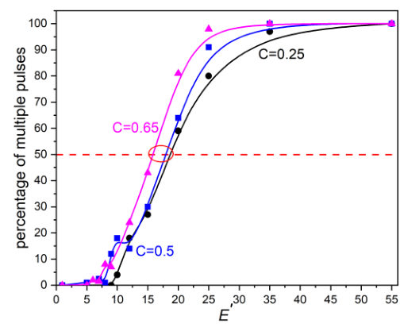
<figcaption class="paper-figure-caption"><b>Fig 1.</b> FIG. 1. Multipulse probability versus normalized energy E′</figcaption>
</figure>
<figure class="paper-figure-card">
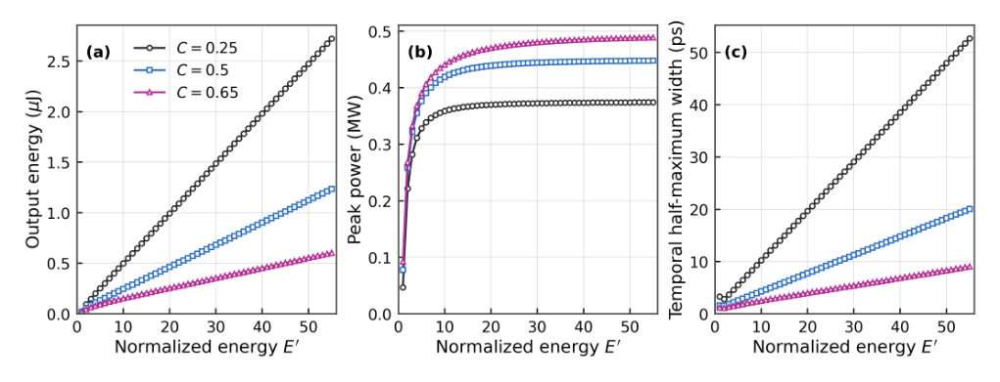
<figcaption class="paper-figure-caption"><b>Fig 2.</b> FIG. 2. Fully deterministic results for DS with A = 0, W = 0, no seed-phase or timing process, and 104 round trips. Every one of the 165 initial conditions in Eq. (21) terminates as a stationary single pulse from the fixed single-pulse initial state. Shown are (a) final output energy, (b) final peak power, and (c) temporal half-maximum width. Black circles, blue squares, and magenta triangles denote C = 0.25, 0.50, and 0.65, respectively. Lines connect deterministic scan points and do not represent statistical fits.</figcaption>
</figure>
<figure class="paper-figure-card">
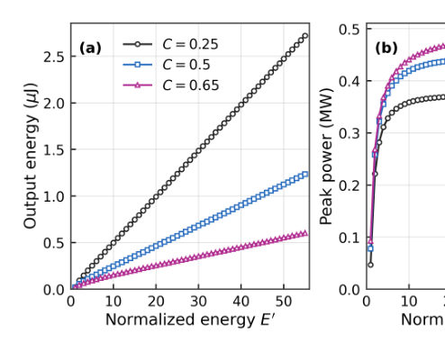
<figcaption class="paper-figure-caption"><b>Fig 3.</b> Figure 2 also verifies the expected DS energy scaling. From E′ = 15 to 55, the output energy increases by fac- tors 3.65, 3.49, and 2.95 for C = 0.25, 0.50, and 0.65, whereas the peak power changes by only 2.0%, 3.5%, and 6.3%. Over the same interval, the temporal half- maximum width grows by factors 3.53, 3.34, and 2.78. Linear fits of output energy versus E′ on this interval give R2 &gt; 0.99999 for all three values of C. Thus, energy scaling proceeds predominantly by pulse broadening with approximate peak-power clamping.</figcaption>
</figure>
<figure class="paper-figure-card">
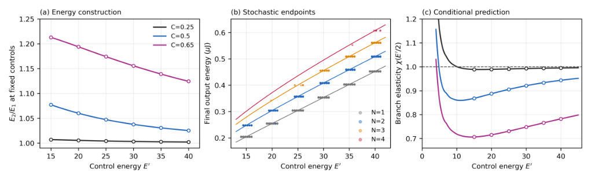
<figcaption class="paper-figure-caption"><b>Fig 4.</b> FIG. 3. Deterministic N-pulse generation. (a) Total output energy of the 216 two-pulse samples relative to the single-pulse ones at the same (C, E′) and the prediction 2E1(E′/2)/E1(E′) of Eq. (34), computed from the single-pulse control alone (lines). (b) Final output energies of all 10,788 trajectories of the noise scan (C = 0.65, A = 10 mW) by noise level for visibility; lines show NE1(E′/N) for N = 1–4 from the deterministic case. (c) Single-pulse elasticity χ of Eq. (44) evaluated at the component control point E′/2; symbols mark the resulting points. The line χ = 1 marks a threshold of the conditional energy reduction, Eq. (45).</figcaption>
</figure>
<figure class="paper-figure-card">
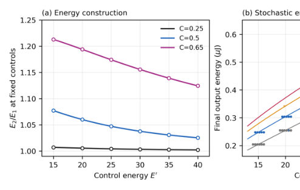
<figcaption class="paper-figure-caption"><b>Fig 5.</b> Figure 5(a) shows the A = 1 mW DS endpoint statis- tics. The seed displaces and broadens the crossover threshold. Thus, the weak seeding signal broadens the DSR domain. The dependence of the multipulse genera- tion probability on the C-parameter is weak. Phase jitter slightly worsens DSR stability, but time jitter improves it.</figcaption>
</figure>
</div>

<p><strong>Summary.</strong> This paper analyzes pulse selection in a laser system operating near a dissipative-soliton-resonance regime using a stochastic Ginzburg-Landau model. The key finding is that injecting a weak optical seed actively suppresses the formation of multiple pulses, thereby stabilizing the single-pulse state and broadening the operational energy window. The methodology relies heavily on advanced numerical simulations and careful statistical analysis to distinguish true resonance effects from controlled stabilization.</p>
<p><strong>Why it may be interesting.</strong> This work bridges nonlinear optics, stochastic processes, and non-equilibrium statistical mechanics by showing how external coherent control can stabilize complex, dissipative states against inherent noise-driven instabilities.</p>
<details>
<summary>Detailed structure</summary>
<p><strong>Main problem.</strong> The study investigates how weak optical seeding controls the competition between single-pulse operation and noise-induced multipulsing in a laser operating in the dissipative-soliton-resonance (DSR) regime.</p>
<p><strong>Main result.</strong> Weak optical seeding suppresses the tendency toward multipulsing, thereby enhancing the energy scalability of dissipative solitons and the DSR window. This control mechanism is distinct from canonical stochastic resonance.</p>
<p><strong>Method.</strong> The research employs numerical simulations solving the stochastic cubic–quintic complex Ginzburg–Landau (CGLE) equation, analyzing endpoint statistics across various noise and energy parameter grids.</p>
<p><strong>Model / system.</strong> The system is modeled by a stochastic CGLE equation, representing a weakly seeded, normal-dispersion laser. The analysis is applied to a physical realization using a Cr2+:ZnS Cavity Photonic Oscillator (CPO).</p>
<p><strong>Key observables.</strong> Pulse number (single vs. multi-pulse), DSR energy window, relative probability of multipulsing (P2), and coherence-sensitive diagnostics like the directional slope (Theta_s).</p>
<p><strong>Important parameters / regimes.</strong> The dissipative-soliton-resonance (DSR) regime, weak optical seed strength, and noise levels (modeled via Gaussian white noise or phase diffusion).</p>
<p><strong>Assumptions / limitations.</strong> The authors distinguish between stationary DS existence, seeded DS robustness, and the accessible DSR range; they caution against equating stationary energy windows with resonance evidence.</p>
<p><strong>Figures summary.</strong> The notes reference aggregate probability plots (Fig. 6) showing endpoint classifications, and plots detailing the relationship between spectral coordinates (r) and energy (E') (Fig. 2).</p>
<p><strong>Paper structure.</strong> The paper progresses by first establishing the stochastic model (CGLE), then detailing the simulation methods (noise sources, scans), presenting the core findings regarding seeding control, and concluding with a careful discussion distinguishing their results from established resonance phenomena.</p>
</details>
<details>
<summary>Abstract</summary>
<p>We study pulse-number selection in a stochastic cubic--quintic complex Ginzburg--Landau model of a weakly seeded, normal-dispersion laser in the dissipative-soliton-resonance (DSR) regime. Optical seed injection suppresses energy-dependent multipulsing and produces a nonmonotonic DSR energy window. The noise-induced formation statistics do not establish canonical stochastic resonance or escape from a pre-existing soliton. Deterministic control by a weak monochromatic seed yields persistent single-pulse behavior within a noticeably broader energy window, enhancing dissipative-soliton energy scalability and DSR.</p>
</details>
<p><sub><a href="#top">↑ back to top</a></sub></p>

<p><a id="paper-2609.31069"></a></p>
<h3 id="plasmonic-modes-in-hybrid-josephson-junction-arrays"><a href="http://arxiv.org/abs/2609.31069v1">Plasmonic Modes in hybrid Josephson Junction Arrays</a></h3>
<p><strong>Authors:</strong> Alex Kirchner, Simon Feyrer, Vjeko Dimić, Johanna Berger, Davide Curcio, Giorgio Biasiol, Michael Prager, Matthias Kronseder, Dominique Bougeard, Nicola Paradiso, Christoph Strunk, Leandro Tosi<br>
<strong>Type:</strong> experiment · <strong>Category:</strong> other · <strong>PDF:</strong> <a href="https://arxiv.org/pdf/2609.31069v1">https://arxiv.org/pdf/2609.31069v1</a><br>
<strong>Analysis basis:</strong> full PDF text, analyzed in chunks
<strong>Topic relevance:</strong> <code>QC/QI experiment</code> <strong>3/5</strong> · <code>analog quantum simulation</code> <strong>2/5</strong> · <code>quantum measurements</code> <strong>2/5</strong> · <code>interference shaping light</code> <strong>1/5</strong> · <code>quantum optics experiment</code> <strong>1/5</strong></p>
<div class="figure-strip-hint">↔ Scroll figures horizontally</div>
<div class="paper-figures-scroll">
<figure class="paper-figure-card">
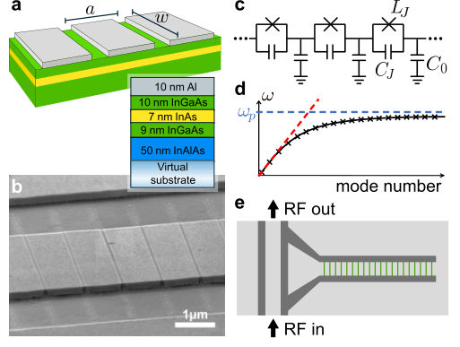
<figcaption class="paper-figure-caption"><b>Fig 1.</b> Figure 1. Device layout. a, Schematic of the Joseph- son junction array (JJA) based on a proximitized 2DEG. The inset shows the heterostructure of device A. The supercon- ducting top layer is depicted in gray, the 2DEG in yellow. b, Scanning electron micrograph of one of the devices, taken prior to the deposition of the AlOx dielectric. c, Circuit model used to describe the electrodynamics of the array. The Josephson junctions are modeled by their Josephson induc- tance LJ. d, Dispersion relation of the circuit model assum- ing C0/CJ = 2/3. The red line indicates the linear regime for small mode number, the blue line indicates the plasma frequency. The black crosses show the expected...</figcaption>
</figure>
<figure class="paper-figure-card">
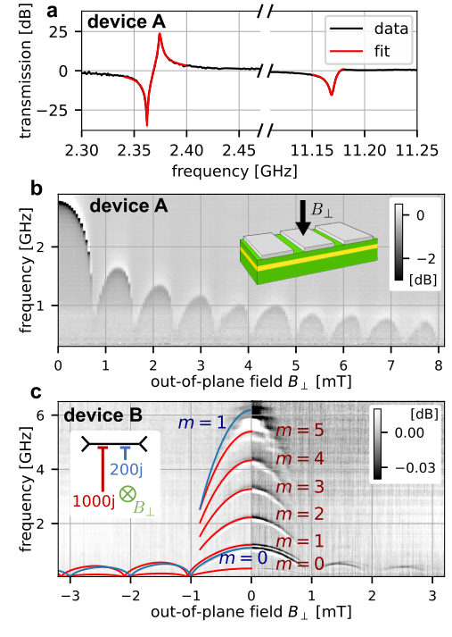
<figcaption class="paper-figure-caption"><b>Fig 2.</b> Figure 2. Transmission measurement and interference pattern. a, Transmission trace of device A at zero magnetic field. The two resonances are fitted by the formula given in [94]. The background is subtracted using a reference mea- surement at higher temperature and magnetic field. b, Inter- ference pattern of the same device. The colorbar shows the transmission parameter S21 with the background subtracted as in panel a. c, Interference pattern of device B. In this device, two JJA resonators with 1000 and 200 junctions, re- spectively, are coupled to the same transmission line. Thus modes of both devices are visible in the colorplot. The red and blue line in the left half are guides to the...</figcaption>
</figure>
<figure class="paper-figure-card">
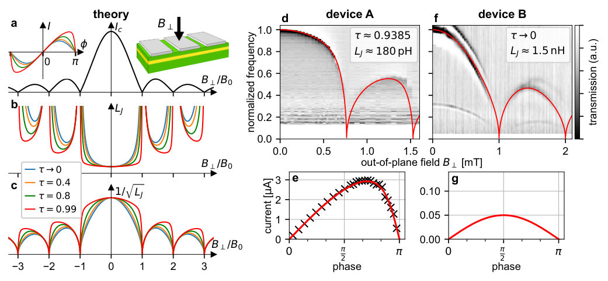
<figcaption class="paper-figure-caption"><b>Fig 3.</b> Figure 3. Extracting the CPR from the measurement of the interference pattern. a, Interference pattern of the critical current, assuming a Beenakker-Furusaki type current phase relation, as shown in the inset. It is numerically identical for all values of the transparency τ. b, Interference pattern of the Josephson inductance for different values of the transparency τ. c, Interference pattern of the inverse squared Josephson inductance. d, Colorplot of the measured interference pattern of device A. A fit of the first lobe is shown in red. e, Extracted CPR of device A. The resonance curves within the first lobe are fitted (black crosses) and fitted to the Beenakker-Furusaki form. f,...</figcaption>
</figure>
</div>

<p><strong>Summary.</strong> This paper uses microwave spectroscopy to characterize Josephson Junction Arrays (JJAs) made from Al/InAs heterostructures. By measuring the plasmonic resonance frequency as a function of an out-of-plane magnetic field, the authors extract the Josephson inductance and the current-phase relation. This demonstrates the utility of JJAs as tunable testbeds for studying superconducting phenomena in hybrid quantum devices.</p>
<p><strong>Why it may be interesting.</strong> The work provides a direct experimental platform to probe the microscopic superconducting properties (like Andreev states) in semiconductor-superconductor interfaces using macroscopic circuit measurements (plasmon resonance), which is highly relevant for superconducting quantum circuit development.</p>
<details>
<summary>Detailed structure</summary>
<p><strong>Main problem.</strong> The paper aims to characterize the Josephson inductance and study the plasmonic modes of Josephson Junction Arrays (JJAs) fabricated on hybrid superconductor-semiconductor heterostructures.</p>
<p><strong>Main result.</strong> The measurements successfully demonstrated the tunability of the Josephson inductance over a broad range of out-of-plane magnetic fields, allowing for the extraction of the current-phase relation (CPR) and effective transparency.</p>
<p><strong>Method.</strong> Microwave characterization measurements were performed by probing the low-energy plasmonic modes of the JJA, analyzing the resulting Fraunhofer-like diffraction patterns.</p>
<p><strong>Model / system.</strong> The physical system is a JJA built on an Al/InAs heterostructure, configured as the center conductor of a coplanar waveguide resonator. The analysis relies on fitting the magnetic field dependence of the resonance frequency to extract the Josephson inductance and CPR.</p>
<p><strong>Key observables.</strong> Josephson inductance ($L_J$), plasmonic modes dispersion relation $\omega(k)$, and the Fraunhofer-like diffraction pattern of the resonance frequency.</p>
<p><strong>Important parameters / regimes.</strong> Out-of-plane magnetic field ($B_{\perp}$), temperature ($T \approx 20 - 100 	ext{ mK}$), and the superconducting gap parameter ($\Delta^*N \approx 16 	ext{ meV}$).</p>
<p><strong>Assumptions / limitations.</strong> The model assumes $C_0/C_J = 2/3$ for dispersion relation calculations, and background subtraction is performed using reference measurements.</p>
<p><strong>Figures summary.</strong> Figures show the device layout and circuit model, the plasmon dispersion relation, and microwave transmission traces illustrating the interference patterns (Fraunhofer patterns) for different devices at various magnetic fields.</p>
<p><strong>Paper structure.</strong> The paper follows a structure of presenting the physical setup (JJA on Al/InAs), detailing the microwave measurement technique (probing plasmon modes), and then analyzing the magnetic field dependence of the resonance to extract fundamental superconducting parameters like $L_J$ and the CPR.</p>
</details>
<details>
<summary>Abstract</summary>
<p>We present microwave characterization measurements of Josephson junction arrays (JJAs) based on epitaxial Al-InAs quantum well heterostructure. The Josephson inductance of the constituent planar junctions can be derived by probing the low-energy plasmon modes of these devices. Applying an out-of-plane magnetic field gives rise to a Fraunhofer-like diffraction pattern, from which the current-phase relation and the effective transparency can be extracted. JJAs can be used to achieve high inductances, suitable for the implementation of quantum circuits. They also provide an excellent test-bed for studying the microscopic excitations of hybrid superconductor-semiconductor devices associated with the presence of Andreev states. Here, we demonstrate their tunability over a broad range of out-of-plane magnetic fields.</p>
</details>
<p><sub><a href="#top">↑ back to top</a></sub></p>

<p><a id="paper-2609.30737"></a></p>
<h3 id="strain-controlled-topology-and-quantum-control-at-a-cubic-cemath838math-crystal-field-crossing"><a href="http://arxiv.org/abs/2609.30737v1">Strain-controlled topology and quantum control at a cubic Ce$^{3+}$ crystal-field crossing</a></h3>
<p><strong>Authors:</strong> A. Ghosh, J. T. Haraldsen<br>
<strong>Type:</strong> theory · <strong>Category:</strong> strongly correlated electrons · <strong>PDF:</strong> <a href="https://arxiv.org/pdf/2609.30737v1">https://arxiv.org/pdf/2609.30737v1</a><br>
<strong>Analysis basis:</strong> full PDF text, analyzed in chunks
<strong>Topic relevance:</strong> <code>analog quantum simulation</code> <strong>3/5</strong> · <code>Keldysh / 2PI / non-Gaussian methods</code> <strong>1/5</strong> · <code>quantum measurements</code> <strong>1/5</strong></p>
<div class="figure-strip-hint">↔ Scroll figures horizontally</div>
<div class="paper-figures-scroll">
<figure class="paper-figure-card">
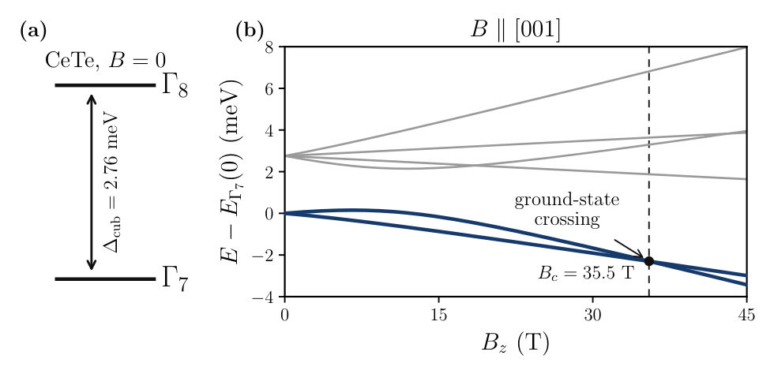
<figcaption class="paper-figure-caption"><b>Fig 1.</b> FIG. 1. Cubic Ce3+ spectrum at the CeTe CEF scale. (a) The zero-field Γ7 doublet and Γ8 quartet are separated by ∆cub = 2.76 meV. (b) Exact six-level spectrum for B ∥[001], measured from the zero-field Γ7 energy. The two lowest branches belong to different C2z sectors and cross at Bc ≃35.5 T.</figcaption>
</figure>
<figure class="paper-figure-card">
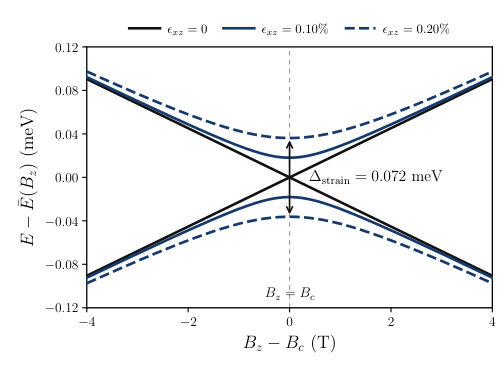
<figcaption class="paper-figure-caption"><b>Fig 2.</b> FIG. 2. Projected avoided crossing for ϵyz = 0 and tensor shears ϵxz = 0, 0.10%, and 0.20%, using the CeTe bench- mark |αT2g| = 18.1 meV per unit tensor strain obtained from the calibrated point-charge calculation described in Sec. III B. The corresponding minimum gaps are 0, 0.0362, and 0.0724 meV.</figcaption>
</figure>
<figure class="paper-figure-card">
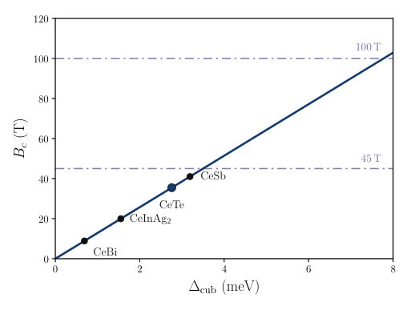
<figcaption class="paper-figure-caption"><b>Fig 3.</b> FIG. 3. Ideal cubic single-ion crossing field as a function of the zero-field CEF splitting, with Bc ≃12.87 ∆cub T when ∆cub is expressed in meV. The markers use representative re- ported CEF splittings for CeBi, CeInAg2, CeTe, and CeSb [22, 26, 27]. Horizontal lines indicate representative 45 T dc and 100 T pulsed-field capabilities demonstrated experimen- tally [28, 29]. The plotted values are screening estimates, not complete high-field phase-diagram predictions.</figcaption>
</figure>
<figure class="paper-figure-card">
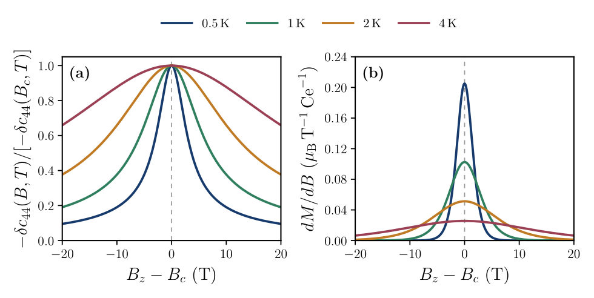
<figcaption class="paper-figure-caption"><b>Fig 4.</b> FIG. 4. Ideal two-level responses for T = 0.5, 1, 2, and 4 K. (a) Normalized magnitude of the T2g elastic softening around the crossing. (b) Crossing contribution to the differential magnetization. Its integral through the reconstructed crossing is 0.78137 µB per Ce in the linear two-level model. The plotted curves show the equilibrium local response; quantitative ultrasound in field can contain additional rotational and dynamical magnetoelastic contributions.</figcaption>
</figure>
<figure class="paper-figure-card">
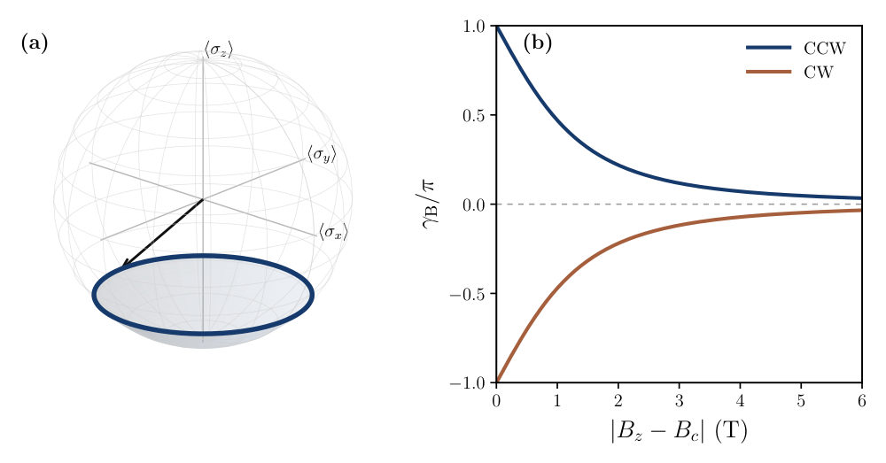
<figcaption class="paper-figure-caption"><b>Fig 5.</b> FIG. 5. Geometric phase from circular shear control. (a) Bloch-sphere trajectory of the lower eigenstate for a circular T2g shear drive. The displayed example uses |αT2g| = 18.1 meV per unit tensor strain, ϵ0 = 0.20%, and |Bz −Bc| = 1.5 T. (b) Lower-state Berry phase for counterclockwise (CCW) and clockwise (CW) loops on the Bz ≤Bc side. Circulation is defined as viewed from positive dz, and phases are defined modulo 2π.</figcaption>
</figure>
</div>

<p><strong>Summary.</strong> This work develops a theoretical framework showing how strain and magnetic fields can control the topology of electronic states at a crystal-field crossing in Ce3+. By analyzing the effective Hamiltonian, the authors predict the existence of a topologically non-trivial point (Chern charge = 1) that can be accessed by tuning strain and magnetic field, offering a route for quantum control in rare-earth materials.</p>
<p><strong>Why it may be interesting.</strong> It provides a concrete, symmetry-dictated pathway to engineer topological quantum states (diabolical points) using external, controllable parameters like mechanical strain, which is highly relevant for quantum control in solid-state systems.</p>
<details>
<summary>Detailed structure</summary>
<p><strong>Main problem.</strong> To establish a symmetry-based framework connecting high-field crystal-field reconstruction, strain response, and parameter-space topology in rare-earth systems.</p>
<p><strong>Main result.</strong> The combination of strain and field detuning can generate an isolated diabolical point with unit-magnitude Chern charge in the 3D control space of a cubic Ce3+ ion.</p>
<p><strong>Method.</strong> Theoretical derivation using an effective two-level Hamiltonian, analyzing the topological features (Chern charge) generated by independent strain and magnetic field controls.</p>
<p><strong>Model / system.</strong> The system is modeled using the cubic Ce3+ ion ($4f^1$) crystal-field splitting, governed by an effective Hamiltonian that incorporates strain ($\epsilon_{xz}, \epsilon_{yz}$) and magnetic field detuning ($\delta B$).</p>
<p><strong>Key observables.</strong> Chern charge ($|C|=1$), gap opening ($\propto |\epsilon_{\perp}|$), elastic susceptibility ($\delta c_{44}$), and geometric phase ($\gamma_{\pm}$).</p>
<p><strong>Important parameters / regimes.</strong> Ideal crossing field near $35.5 	ext{ T}$ (for CeTe); representative shear coupling $|\alpha_{T2g}| \simeq 18.1 	ext{ meV}$ per unit tensor strain.</p>
<p><strong>Assumptions / limitations.</strong> The analysis uses a single-ion point-charge model, which neglects full hybridization effects in the actual compound.</p>
<p><strong>Figures summary.</strong> Figures illustrate the spectrum at the CeTe scale, the gap opening due to strain, and the Bloch-sphere trajectory used to calculate the Berry phase for quantum control.</p>
<p><strong>Paper structure.</strong> The paper progresses from defining the symmetry-protected crossing, deriving the effective Hamiltonian, calculating the topological invariant (Chern charge) using strain and field detuning as controls, and finally discussing the experimental signatures (elastic/magnetic).</p>
</details>
<details>
<summary>Abstract</summary>
<p>Field-tuned crystal-field crossings provide a route to synthetic topology in localized rare-earth degrees of freedom when symmetry-resolved perturbations can independently control the crossing states. Here we show that a field-induced crossing in cubic Ce$^{3+}$ has precisely this structure. For $B\parallel[001]$, the crossing is protected by a twofold rotation, while the $T_{2g}$ shears $ε_{xz}$ and $ε_{yz}$ break that protection and mix the two states through orthogonal pseudospin components. Together with magnetic-field detuning, these controls generate an isolated diabolical point with unit-magnitude Chern charge in a three-dimensional parameter space. Using the CeTe crystal-field scale gives an ideal single-ion crossing near $35.5$ T. A calibrated point-charge calculation gives a representative projected shear coupling $|α_{T_{2g}}|\simeq18.1$ meV per unit tensor strain, corresponding to gaps of $0.036$ and $0.072$ meV for tensor shears of $0.10\%$ and $0.20\%$. We identify the associated elastic and magnetic signatures, discuss the limitations of the electrostatic estimate in a hybridizing Ce compound, and determine the adiabatic and coherence requirements for cyclic geometric control. The result is a symmetry-based framework that connects high-field crystal-field reconstruction, strain response, and parameter-space topology in rare-earth systems.</p>
</details>
<p><sub><a href="#top">↑ back to top</a></sub></p>

<p><a id="paper-2609.30791"></a></p>
<h3 id="topological-superconducting-phases-in-a-strained-altermagnet-superconductor-heterostructure"><a href="http://arxiv.org/abs/2609.30791v1">Topological Superconducting Phases in a Strained Altermagnet-Superconductor Heterostructure</a></h3>
<p><strong>Authors:</strong> Keita Yoshizawa, Ryo Okugawa, Takami Tohyama<br>
<strong>Type:</strong> theory · <strong>Category:</strong> other · <strong>PDF:</strong> <a href="https://arxiv.org/pdf/2609.30791v1">https://arxiv.org/pdf/2609.30791v1</a><br>
<strong>Analysis basis:</strong> full PDF text, analyzed in chunks
<strong>Topic relevance:</strong> <code>analog quantum simulation</code> <strong>3/5</strong></p>
<div class="figure-strip-hint">↔ Scroll figures horizontally</div>
<div class="paper-figures-scroll">
<figure class="paper-figure-card">
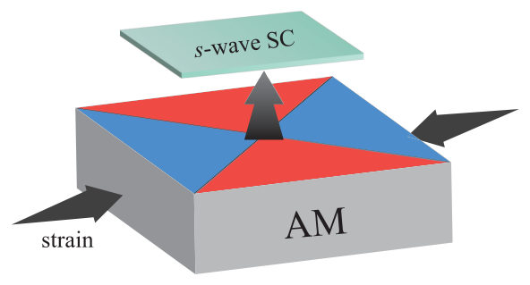
<figcaption class="paper-figure-caption"><b>Fig 1.</b> Fig. 1. Schematic of a heterostructure consisting of a two-dimensional s-wave superconducting layer (SC) and a d-wave altermagnet (AM).</figcaption>
</figure>
<figure class="paper-figure-card">
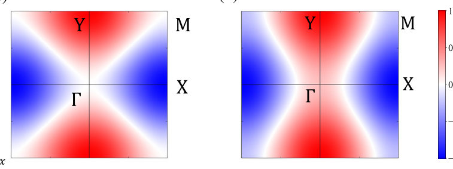
<figcaption class="paper-figure-caption"><b>Fig 2.</b> Fig. 2. Momentum dependence of the normalized effective magnetic field ˜M(k) for (a) b = 1 and (b) b = 0.6.</figcaption>
</figure>
<figure class="paper-figure-card">
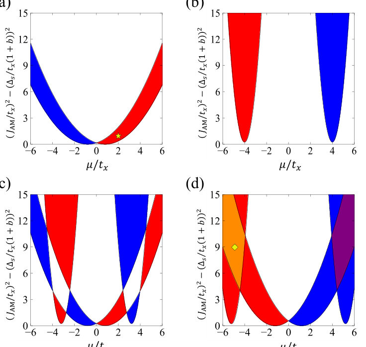
<figcaption class="paper-figure-caption"><b>Fig 3.</b> Fig. 3. Topological phase diagrams of the heterostructure for (a) b = 1 and ty = 0.6tx, (b) b = 0.6 and tx = ty, (c) b = 0.6 and ty = 0.6tx, and (d) b = 0.6 and ty = 1.6tx. The red, blue, orange, and purple regions indicate C = 1, C = −1, C = 2, and C = −2, respectively. The star in (a) and the diamond in (d) indicate the parameter sets used to calculate the edge spectra in Fig. 4.</figcaption>
</figure>
<figure class="paper-figure-card">
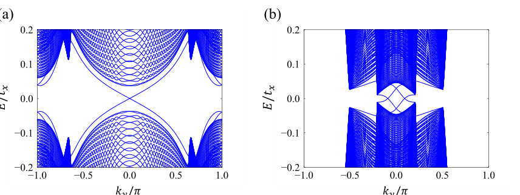
<figcaption class="paper-figure-caption"><b>Fig 4.</b> Fig. 4. Energy spectra for the parameter sets indicated by (a) the star in Fig. 3(a) and (b) the diamond in Fig. 3(d). The star and diamond correspond to µ = 2tx and JAM = tx, and µ = −5tx and JAM = 3tx, respectively.</figcaption>
</figure>
</div>

<p><strong>Summary.</strong> This theoretical study explores topological superconductivity in an altermagnet-superconductor heterostructure, focusing on the role of strain and hopping anisotropy. By calculating the Chern number, the authors demonstrate that structural distortions can induce robust topological phases. This work suggests that strain offers a powerful, controllable route to realizing topological superconductivity in magnetic heterostructures.</p>
<p><strong>Why it may be interesting.</strong> The explicit connection between lattice strain (a structural parameter) and the realization of exotic topological superconducting states is highly relevant for designing novel quantum materials and superconducting devices.</p>
<details>
<summary>Detailed structure</summary>
<p><strong>Main problem.</strong> The study investigates the emergence and control of topological superconductivity within a heterostructure composed of an s-wave superconductor and a d-wave altermagnet.</p>
<p><strong>Main result.</strong> Strain-induced lattice distortion and hopping anisotropy are shown to be effective mechanisms that allow topological superconducting phases with high Chern numbers (up to |C|=2) to emerge over broad parameter regions.</p>
<p><strong>Method.</strong> The authors calculate the Chern number using the Bogoliubov-de Gennes Hamiltonian and confirm the topological nature by observing gapless Majorana edge modes under open boundary conditions.</p>
<p><strong>Model / system.</strong> The system is a 2D heterostructure combining an s-wave superconductor and a d-wave altermagnet, modeled using the Bogoliubov–de Gennes Hamiltonian. The model incorporates strain effects via a parameter 'b' and Rashba spin-orbit coupling.</p>
<p><strong>Key observables.</strong> Topological phase diagrams characterized by the Chern number (C), and the existence of gapless Majorana edge modes.</p>
<p><strong>Important parameters / regimes.</strong> Strain parameter (b), chemical potential ($\mu$), and hopping anisotropy ($t_x$ vs $t_y$).</p>
<p><strong>Assumptions / limitations.</strong> The analysis assumes fixed parameters for the superconducting gap ($\Delta_s$) and spin-orbit coupling ($\alpha$), and simplifies gap closing analysis by setting $\sin k_x = \sin k_y = 0$ at high-symmetry points.</p>
<p><strong>Figures summary.</strong> Figures illustrate the schematic of the heterostructure, the momentum dependence of the effective magnetic field under strain, the resulting topological phase diagrams showing |C| regions, and energy spectra confirming gapless Majorana edge modes.</p>
<p><strong>Paper structure.</strong> The paper proceeds by defining the model Hamiltonian, calculating the Chern number to map out topological phase diagrams as a function of strain and anisotropy, and finally confirming the physical realization of the topological phases via the detection of Majorana edge modes.</p>
</details>
<details>
<summary>Abstract</summary>
<p>We investigate topological superconductivity in a heterostructure consisting of a two-dimensional $s$-wave superconductor and a $d$-wave altermagnet with Rashba spin-orbit coupling. In particular, we study the effects of strain and hopping anisotropy on the topological superconducting phases. By calculating the Chern number, we obtain topological phase diagrams as functions of the chemical potential and the strength of the effective magnetic field induced by the magnetic proximity effect. We find that strain-induced lattice distortion allows topological superconducting phases to emerge over a broad parameter region. Our findings suggest that strain that lowers symmetry can serve as a route to realizing topological superconductivity in altermagnet-superconductor heterostructures.</p>
</details>
<p><sub><a href="#top">↑ back to top</a></sub></p>

<p><a id="paper-2609.31367"></a></p>
<h3 id="a-quantitative-phase-field-model-for-grain-boundary-trapping-and-diffusion-of-hydrogen"><a href="http://arxiv.org/abs/2609.31367v1">A quantitative phase-field model for grain boundary trapping and diffusion of hydrogen</a></h3>
<p><strong>Authors:</strong> Vincent Feyen, Martin Diehl, Nele Moelans<br>
<strong>Type:</strong> theory · <strong>Category:</strong> statistical mechanics · <strong>PDF:</strong> <a href="https://arxiv.org/pdf/2609.31367v1">https://arxiv.org/pdf/2609.31367v1</a><br>
<strong>Analysis basis:</strong> full PDF text, analyzed in chunks
<strong>Topic relevance:</strong> <code>Keldysh / 2PI / non-Gaussian methods</code> <strong>2/5</strong> · <code>analog quantum simulation</code> <strong>2/5</strong> · <code>methods for driven-dissipative</code> <strong>2/5</strong> · <code>Frenkel-Kontorova</code> <strong>1/5</strong> · <code>correlated / nonlocal dissipation</code> <strong>1/5</strong> · <code>driven-dissipative phase transition</code> <strong>1/5</strong> · <code>non-equilibrium universality</code> <strong>1/5</strong> · <code>quantum measurements</code> <strong>1/5</strong></p>
<div class="figure-strip-hint">↔ Scroll figures horizontally</div>
<div class="paper-figures-scroll">
<figure class="paper-figure-card">
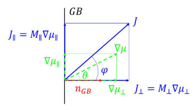
<figcaption class="paper-figure-caption"><b>Fig 1.</b> Figure 1: Projection of the mobility onto the GB, which results in a decomposition of the overall flux into the per- pendicular flux 𝐽⟂and the parallel flux 𝐽∥.</figcaption>
</figure>
<figure class="paper-figure-card">
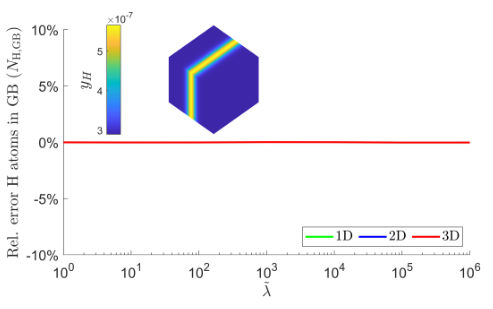
<figcaption class="paper-figure-caption"><b>Fig 2.</b> Figure 2: Benchmark 1: Relative error in the total amount of hydrogen trapped at the GB compared to the analytical solution as a function of the normalized interfacial thickness. The error remains below 0.02% for all cases, indicating that all formulations are equivalent for practical applications.</figcaption>
</figure>
<figure class="paper-figure-card">
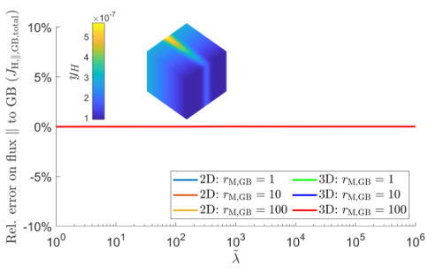
<figcaption class="paper-figure-caption"><b>Fig 3.</b> Figure 4: Benchmark 3: Relative error in the steady-state flux parallel to the GB compared to the analytical solution as a function of the normalized interfacial thickness. The error remains below 1% for all cases, indicating that all formulations are equivalent for practical applications.</figcaption>
</figure>
<figure class="paper-figure-card">
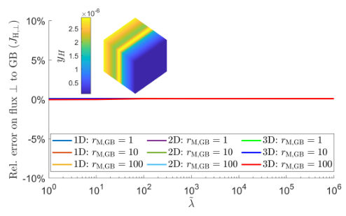
<figcaption class="paper-figure-caption"><b>Fig 4.</b> Figure 3: Benchmark 2: Relative error in the steady-state flux perpendicular to the GB compared to the analytical solution as a function of the normalized interfacial thickness. The error remains below 1% for all cases, indicating that all formulations are equivalent for practical applications.</figcaption>
</figure>
<figure class="paper-figure-card">
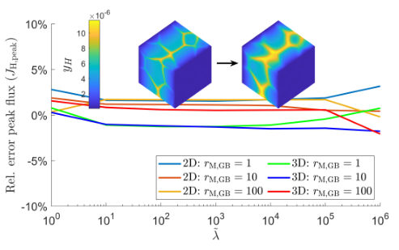
<figcaption class="paper-figure-caption"><b>Fig 5.</b> Figure 5: Benchmark 4: Relative error in the peak flux of the TDS spectrum, compared with the corresponding fine- mesh simulation, for different GB mobility ratios (𝑟M,GB = 𝑀at,H,GB,0∕𝑀at,H,B,0) in two and three dimensions. The abso- lute errors remain below 3%, reflecting the unavoidable loss of accuracy associated with the coarser spatial resolution. Nevertheless, as long as the grain structure is properly re- solved, the formulation is identical for practical applications.</figcaption>
</figure>
</div>

<p><strong>Summary.</strong> This work introduces a quantitative phase-field model to accurately simulate hydrogen diffusion and trapping in polycrystalline metals, explicitly accounting for the interconnected nature of grain boundaries. It corrects deficiencies in older models by treating GBs as continuous pathways rather than isolated traps. The results show that grain boundary transport fundamentally alters measurable properties like TDS spectra and effective diffusion coefficients.</p>
<p><strong>Why it may be interesting.</strong> While focused on materials science, the rigorous development of a coupled, multi-scale transport model involving equilibrium constraints and anisotropic diffusion echoes complex non-equilibrium dynamics found in open quantum systems or reaction-diffusion processes.</p>
<details>
<summary>Detailed structure</summary>
<p><strong>Main problem.</strong> The paper addresses the limitations of conventional hydrogen trapping models that fail to account for the interconnected nature of grain boundaries (GBs) in polycrystalline metals.</p>
<p><strong>Main result.</strong> The quantitative phase-field model demonstrates that grain boundary diffusion significantly shifts TDS peaks, invalidating simple Kissinger-type analyses, and shows effective diffusion coefficients depend strongly on multiple material parameters.</p>
<p><strong>Method.</strong> A quantitative phase-field model is developed to simulate coupled hydrogen diffusion, trapping, and transport along grain boundaries.</p>
<p><strong>Model / system.</strong> The system is hydrogen diffusing and trapping in polycrystalline metals with a static microstructure. The model uses phase-field methods to describe the microstructure and solves coupled differential equations for hydrogen site fractions in both the bulk lattice and the GB regions.</p>
<p><strong>Key observables.</strong> Total trapped hydrogen content, hydrogen fluxes (parallel/perpendicular to GBs), effective diffusion coefficients ($D_{eff,ss}$), and TDS peak shifts.</p>
<p><strong>Important parameters / regimes.</strong> Grain size, trapping free energy ($\Delta\mu_{H,b,GB}$), temperature, and grain boundary mobility.</p>
<p><strong>Assumptions / limitations.</strong> The microstructure is assumed static (no grain movement), and the model neglects mechanical effects like stress-assisted diffusion.</p>
<p><strong>Figures summary.</strong> Figure 12 shows the relative error in total hydrogen concentration over time for a perpendicular flux benchmark. Figure 13 compares simulated effective steady-state diffusion coefficients against an analytical fit.</p>
<p><strong>Paper structure.</strong> The paper first introduces the quantitative phase-field model framework, then applies it to benchmark simulations (e.g., perpendicular flux) to validate the methodology, and finally applies it to interpret experimental observables like TDS spectra and effective diffusion coefficients.</p>
</details>
<details>
<summary>Abstract</summary>
<p>Grain boundaries influence hydrogen transport in polycrystalline metals by acting as both trapping sites and interconnected diffusion pathways. Conventional interpretations of thermal desorption spectroscopy (TDS) and permeation experiments often treat traps as isolated defects, neglecting grain boundary connectivity and potentially misinterpreting experimental data. Here, we develop a quantitative phase-field model for hydrogen diffusion, grain boundary trapping, and grain boundary-assisted transport. The formulation preserves the physical grain boundary volume independently of the numerical interface thickness and accounts for anisotropic diffusion parallel and perpendicular to grain boundaries. Benchmark simulations verify quantitative behavior under interface upscaling. The model shows that grain boundary diffusion can significantly shift TDS peaks, making Kissinger-type analyses unreliable when grain boundary transport is significant. Effective diffusion coefficients are also shown to depend strongly on grain size, trapping free energy, temperature, and grain boundary mobility. These results highlight the coupled role of trapping thermodynamics, bulk diffusion, and grain-boundary transport.</p>
</details>
<p><sub><a href="#top">↑ back to top</a></sub></p>

<p><a id="paper-2609.30852"></a></p>
<h3 id="energetically-driven-structure-matching-for-autonomous-total-x-ray-scattering-experiments"><a href="http://arxiv.org/abs/2609.30852v1">Energetically Driven Structure Matching for Autonomous Total X-ray Scattering Experiments</a></h3>
<p><strong>Authors:</strong> Emil J. P. Frost, Martin A. Karlsen, Jonas H. Jensen, Rodrigo Moreno, Jørn Lambertsen, Jonathan Quinson, Andy S. Anker, Alexander Bagger, Tejs Vegge<br>
<strong>Type:</strong> both · <strong>Category:</strong> numerical methods · <strong>PDF:</strong> <a href="https://arxiv.org/pdf/2609.30852v1">https://arxiv.org/pdf/2609.30852v1</a><br>
<strong>Analysis basis:</strong> full PDF text, analyzed in chunks
<strong>Topic relevance:</strong> <code>Keldysh / 2PI / non-Gaussian methods</code> <strong>2/5</strong> · <code>methods for driven-dissipative</code> <strong>2/5</strong> · <code>quantum measurements</code> <strong>2/5</strong> · <code>analog quantum simulation</code> <strong>1/5</strong></p>
<div class="figure-strip-hint">↔ Scroll figures horizontally</div>
<div class="paper-figures-scroll">
<figure class="paper-figure-card">

<figcaption class="paper-figure-caption"><b>Fig 1.</b> Figure 1: Conceptual extension of the ScatterLab workflow with MLIP-guided in-line structure analysis. Synthesis is performed by the robotic platform, followed by characterization using synchrotron X-ray scattering. Experimental scattering data feed directly into the Bayesian optimizer, which selects synthesis parameters for the next iteration. The yellow arrows indicate the proposed extension to the original ScatterLab workflow: experimental data are analysed against energetically informed candidate structures, and the resulting structural information is fed back to enable updating of the target structure during an autonomous campaign.</figcaption>
</figure>
<figure class="paper-figure-card">

<figcaption class="paper-figure-caption"><b>Fig 2.</b> Figure 2: Fitting experimental scattering with MD-sampled gold NPs. Panel (a) shows the reduced total scattering function from the experiment (black) along with the best-fitting NP in each considered morphology. The weighted profile residuals, Rwp[F(Q)], (Equation (10)) between simulated and experimental F(Q) are found in the legend. The F(Q) residuals are shown in the bottom of panel (a). These NPs are the marked minima in (c) whose relaxed geometry (colored by local strain) is shown in (b) in the correct relative sizes. Panel (c) shows goodness-of-fit scans within each morphology as a function of NP size.</figcaption>
</figure>
<figure class="paper-figure-card">

<figcaption class="paper-figure-caption"><b>Fig 3.</b> Figure 3: Comparison between sampling approaches. (a-c) Size scans with (a) idealized, (b) relaxed, and (c) MD- sampled NPs (same as Figure 2c). (d) Reduced total scattering structure functions between the methods using the best-fitting NP in the MD approach (blue star in (c)). Residuals from experiment are shown in the bottom panel. (e-f) Size predictions of 20 experimental samples shown as parity plots between methods. Error bars show the mean and standard deviation of the distribution of particle sizes within ∆Rwp = 0.01 of the minimum. The dashed line is the parity line and the full line is the best linear fit (slope written in inset).</figcaption>
</figure>
<figure class="paper-figure-card">

<figcaption class="paper-figure-caption"><b>Fig 4.</b> Figure 4: Time usage for simulating scattering from a NP on an NVIDIA H200 for the three proposed sampling methods: idealized, geometry-relaxed, or MD-sampled NPs. Idealized sampling only computes simulated scattering – the others also update geometries with a finetuned MACE-MATPES-PBE-0 model as the MLIP. We assume an MLIP troughput of 400 000 atoms × steps/s (see Figure S17c) and use 4000 energy/force evaluations for MD (10 ps equilibration + 10 ps sampling with a 5 fs time step). Shaded areas indicate uncertainty in the number of required relaxation steps; the boundary is from power law fits to the number of relaxation steps required for each morphology (using the data in Figure S4). The...</figcaption>
</figure>
<figure class="paper-figure-card">

<figcaption class="paper-figure-caption"><b>Fig 5.</b> Figure 3d compares the simulated reduced total scattering structure functions across the three approaches using the best-fitting MD-sampled NP. To this comparison, we make two remarks. First, the idealized structure results in sharper features than the more disordered relaxed and MD-sampled structures with modified strain. Second, the static methods fail to capture the decay of F(Q) at high Q; the MD-sampled structure exhibits a more realistic decay and a flatter residual than the two static methods. Thus, temperature effects are not properly captured with a Debye-Waller correction. Direct sampling of the PES through MD is more accurate, although computationally more expensive.</figcaption>
</figure>
</div>

<p><strong>Summary.</strong> This work introduces an energetically driven framework to analyze total X-ray scattering data from nanoparticles in real-time for autonomous experiments. By comparing idealized, MLIP-relaxed, and MD-sampled structures, the authors demonstrate that advanced sampling methods are crucial for accurately determining particle morphology and size. This provides a pathway for integrating computational structure refinement directly into closed-loop experimental campaigns.</p>
<p><strong>Why it may be interesting.</strong> While focused on materials science, the core methodology—developing robust, computationally efficient simulation pipelines (MLIPs, MD sampling) to interpret complex, noisy experimental data—is highly relevant to developing simulation tools for quantum many-body systems.</p>
<details>
<summary>Detailed structure</summary>
<p><strong>Main problem.</strong> Developing a real-time, energetically driven framework to convert total X-ray scattering data into reliable, atomistic structural models for autonomous materials discovery.</p>
<p><strong>Main result.</strong> A hierarchical workflow combining rapid idealized screening with targeted MLIP relaxation and MD refinement significantly improves structural feedback compared to idealized models, leading to better size and morphology determination.</p>
<p><strong>Method.</strong> The authors compare three structural sampling methods—idealized, MLIP-relaxed, and MD-sampled—to fit experimental total X-ray scattering data using a weighted profile residual ($R_{wp}$).</p>
<p><strong>Model / system.</strong> The study uses gold nanoparticles (NPs) with various crystal morphologies (spherical, octahedral, decahedral, icosahedral) whose structures are modeled using MLIPs and sampled via MD simulations.</p>
<p><strong>Key observables.</strong> Total X-ray scattering data, weighted profile residual ($R_{wp}$), particle size, and internal strain ($\epsilon_i$).</p>
<p><strong>Important parameters / regimes.</strong> Temperature (e.g., 300 K, 250 K), scattering momentum transfer ($Q$), and the tolerance for size estimation ($\Delta R_{wp} = 0.01$).</p>
<p><strong>Assumptions / limitations.</strong> Idealized models neglect surface relaxation, strain, and thermal disorder; MD simulations often approximate explicit water solvation for computational feasibility.</p>
<p><strong>Figures summary.</strong> Figures compare scattering results across idealized, relaxed, and MD-sampled geometries, showing that MD sampling yields the best fit and size estimates. Other figures detail convergence, strain analysis, and computational speed-ups.</p>
<p><strong>Paper structure.</strong> The paper progresses by first establishing the need for real-time analysis in autonomous labs, then comparing the accuracy of idealized vs. MLIP/MD sampling on gold NPs, and finally detailing the hierarchical workflow for iterative structure refinement.</p>
</details>
<details>
<summary>Abstract</summary>
<p>The emergence of autonomous laboratories motivates rapid conversion of experimental data into reliable atomistic models on time-scales compatible with closed-loop optimization. Here we develop an energetically driven structure matching framework for analysis during ongoing total X-ray scattering experiments. Using data from gold nanoparticles, we match against idealized spherical, octahedral, decahedral, and icosahedral geometries, their machine-learned interatomic potential (MLIP)-relaxed structures, and molecular dynamics (MD) ensembles. Idealized models are fast to generate but can misassign morphology and systematically underestimate size by neglecting surface relaxation, strain, and thermal disorder. MLIP relaxation markedly improves both, while MD ensemble averaging agrees best with experiment. We therefore introduce a hierarchical workflow combining rapid idealized screening with targeted MLIP and MD refinement of top candidates, delivering improved structural feedback without interrupting autonomous operation. This framework provides a route towards autonomous campaigns in which the target structure itself can be updated in response to the evolving energy landscape of structures compatible with the experimental data.</p>
</details>
<p><sub><a href="#top">↑ back to top</a></sub></p>

<p><a id="paper-2609.31203"></a></p>
<h3 id="orbital-photoinduced-faraday-effect-in-a-lattice-of-conducting-disks"><a href="http://arxiv.org/abs/2609.31203v1">Orbital photoinduced Faraday effect in a lattice of conducting disks</a></h3>
<p><strong>Authors:</strong> A. A. Gunyaga, M. V. Durnev<br>
<strong>Type:</strong> theory · <strong>Category:</strong> other · <strong>PDF:</strong> <a href="https://arxiv.org/pdf/2609.31203v1">https://arxiv.org/pdf/2609.31203v1</a><br>
<strong>Analysis basis:</strong> full PDF text, analyzed in chunks
<strong>Topic relevance:</strong> <code>Keldysh / 2PI / non-Gaussian methods</code> <strong>2/5</strong> · <code>interference shaping light</code> <strong>2/5</strong> · <code>methods for driven-dissipative</code> <strong>2/5</strong></p>
<div class="figure-strip-hint">↔ Scroll figures horizontally</div>
<div class="paper-figures-scroll">
<figure class="paper-figure-card">

<figcaption class="paper-figure-caption"><b>Fig 1.</b> FIG. 1. Photoinduced Faraday and Kerr effects in a square lattice of conducting disks. A circularly polarized pump wave induces a high-frequency Hall conductivity of electrons in the disks, σxy = −σyx, resulting in Faraday and Kerr rotation of a linearly polarized probe wave. The rotation is resonantly enhanced when the pump and probe frequencies are close to the disk plasmon frequency ω0.</figcaption>
</figure>
<figure class="paper-figure-card">

<figcaption class="paper-figure-caption"><b>Fig 2.</b> FIG. 2. (a) Pump-induced Faraday rotation angle θF and (b) the accompanying ellipticity ϵF in lattices of conducting disks for fixed pump frequencies Ωset to be resonant with the lattice plasmon frequencies ω0 (shown by vertical lines). The three solid curves correspond to lattices with different disk radii R = 0.5, 1 and 2 µm, while the ratio R/a is fixed at 1/3. For comparison, the dash-dotted lines show results for a uniform electron layer with the same average density of elec- trons per unit area as in the lattices. The dash-dotted lines are calculated for the same values of Ωas the corresponding solid lines. The pump intensity is I = 1 kW/cm2, relaxation times τ1 = τ2 ∝(εp)−1/2; other...</figcaption>
</figure>
<figure class="paper-figure-card">

<figcaption class="paper-figure-caption"><b>Fig 3.</b> FIG. 3. (a) Pump-induced Faraday rotation angle θF and (b) the accompanying ellipticity ϵF in lattices of conducting disks for coinciding pump and probe frequencies, ω = Ω. The three solid curves correspond to lattices with different disk radii R = 0.5, 1 and 2 µm, while the ratio R/a is fixed at 1/3. The lattice plasmon frequencies ω0 are shown by vertical lines. For comparison, the dashed lines show the results for a uniform electron layer with the same average density of electrons per unit area as in the lattices. The pump intensity is I = 1 kW/cm2, relaxation times τ1 = τ2 ∝(εp)−1/2; other parameters are listed in the text.</figcaption>
</figure>
<figure class="paper-figure-card">

<figcaption class="paper-figure-caption"><b>Fig 4.</b> FIG. 4. Role of the scattering potential. Pump-induced Fara- day rotation angle (a) for a fixed pump frequency Ω= ω0 and (b) for coinciding pump and probe frequencies, ω = Ω, for two types of scattering potential: short-range scatterers (blue solid curves) and charged scatterers with the Coulomb poten- tial (red solid curves). For comparison, the black dashed line shows Faraday rotation by the same disk lattice in an external magnetic field B = 0.1 T. R = 1 µm, I = 1 kW/cm2.</figcaption>
</figure>
</div>

<p><strong>Summary.</strong> This theoretical work analyzes the Faraday and Kerr effects in lattices of conducting disks, proposing that the rotation arises from a nonlinear, pump-induced Hall conductivity ($\sigma_{xy}$). The theory predicts significant enhancement of these optical responses when the pump and probe frequencies approach the plasmon resonance, successfully explaining large rotation angles observed experimentally.</p>
<p><strong>Why it may be interesting.</strong> The mechanism relies on nonlinear optical response ($\sigma_{xy} \propto |E|^2$) rather than the standard Inverse Faraday Effect, providing a novel theoretical understanding of giant optical responses in structured materials.</p>
<details>
<summary>Detailed structure</summary>
<p><strong>Main problem.</strong> The study investigates the mechanism and magnitude of pump-induced Faraday and Kerr rotation in a two-dimensional lattice of conducting disks.</p>
<p><strong>Main result.</strong> The rotation is shown to originate from a third-order nonlinear response inducing a Hall-like conductivity ($\sigma_{xy} = -\sigma_{yx}$), leading to giant enhancement near plasmon resonance, matching experimental observations.</p>
<p><strong>Method.</strong> The analysis uses a theoretical framework involving solving Maxwell's equations and calculating the nonlinear conductivity tensor ($\sigma_{xy}$) using time-dependent perturbation theory.</p>
<p><strong>Model / system.</strong> The system modeled is a square lattice of conducting disks (oblate spheroids) embedded in a dielectric medium, analyzed using a quasi-two-dimensional approximation.</p>
<p><strong>Key observables.</strong> Faraday and Kerr rotation angles ($    heta_F,     heta_K$) and ellipticities ($\epsilon_F, \epsilon_K$).</p>
<p><strong>Important parameters / regimes.</strong> Plasmon resonance frequency ($\omega_0$), pump intensity ($1 	ext{ kW/cm}^2$), lattice period ($a$), and dielectric constants ($\epsilon_1, \epsilon_2$).</p>
<p><strong>Assumptions / limitations.</strong> The analysis assumes the low-intensity regime ($|\sigma_{xy}| \ll |\sigma_{xx}|$) and utilizes approximations for the current density and field components.</p>
<p><strong>Figures summary.</strong> Figures illustrate the photoinduced Faraday/Kerr effects, showing resonances in $  heta_F$ and $\epsilon_F$ vs. probe frequency ($\omega$) when the pump frequency ($\Omega$) is tuned to the plasmon resonance ($\omega_0$).</p>
<p><strong>Paper structure.</strong> The paper develops the theory by deriving the nonlinear $\sigma_{xy}$ from the electron gas response, then calculates the resulting Faraday/Kerr response using transmission/reflection coefficients, and finally analyzes the resonance enhancement near the plasmon frequency.</p>
</details>
<details>
<summary>Abstract</summary>
<p>We present a theoretical study of pump-induced Faraday and Kerr rotation in a two-dimensional lattice of conducting disks. We propose a mechanism of Faraday and Kerr responses in which a circularly polarized pump directly induces a high-frequency Hall component $σ_{xy}=-σ_{yx}$ of the electron conductivity tensor at the probe frequency. Microscopically, $σ_{xy}$ originates from the third-order nonlinear response of the electron gas rather than from the real magnetic field created by solenoidal charge currents in the inverse Faraday effect. We show that the Faraday and Kerr rotation angles are significantly enhanced when the pump and probe frequencies are tuned close to the plasmon resonance of the disks, reaching $\sim 0.1^\circ$ per 1~kW/cm$^2$ of incident pump intensity in the terahertz range. This mechanism can explain recently observed giant pump-induced Faraday rotation in graphene disk lattices.</p>
</details>
<p><sub><a href="#top">↑ back to top</a></sub></p>

<p><a id="paper-2609.30430"></a></p>
<h3 id="engineering-nonlinear-spin-orbit-torque-driven-by-intra-band-transport-in-mosemath893mathcrimath894math-and-wsemath895mathcrimath896math-van-der-waals-heterostructures"><a href="http://arxiv.org/abs/2609.30430v1">Engineering nonlinear spin-orbit torque driven by intra-band transport in MoSe$_2$/CrI$_3$ and WSe$_2$/CrI$_3$ van der Waals heterostructures</a></h3>
<p><strong>Authors:</strong> Leyla Majidi, Azadeh Faridi, Reza Asgari<br>
<strong>Type:</strong> theory · <strong>Category:</strong> other · <strong>PDF:</strong> <a href="https://arxiv.org/pdf/2609.30430v1">https://arxiv.org/pdf/2609.30430v1</a><br>
<strong>Analysis basis:</strong> full PDF text, analyzed in chunks
<strong>Topic relevance:</strong> <code>Keldysh / 2PI / non-Gaussian methods</code> <strong>2/5</strong> · <code>methods for driven-dissipative</code> <strong>2/5</strong></p>
<div class="figure-strip-hint">↔ Scroll figures horizontally</div>
<div class="paper-figures-scroll">
<figure class="paper-figure-card">

<figcaption class="paper-figure-caption"><b>Fig 1.</b> FIG. 1. Chemical potential dependence of the non-zero components of the non-equilibrium spin polarization Soc in WSe2/CrI3 bilayer with different magnetization directions θm [(a)-(b)] and the strength of the in-plane spin-orbit torque τoc in WSe2- and MoSe2-based bi- layers with θM = π/4 (c). (d) The strength of the spin-orbit torque τoc</figcaption>
</figure>
<figure class="paper-figure-card">

<figcaption class="paper-figure-caption"><b>Fig 2.</b> FIG. 2. Left (Right) panel: The chemical potential dependence of the in-plane spin-orbit torque τoc for WSe2- (MoSe2-) based bilayer in the absence and presence of twisting (with θtwist = 30◦), when θm = π/4 and ϕm = 0. Inset of (b) shows the zoomed-in view of τoc</figcaption>
</figure>
<figure class="paper-figure-card">

<figcaption class="paper-figure-caption"><b>Fig 3.</b> FIG. 3. Top (Bottom) panel: The strength of the spin-orbit torque τoc in terms of the magnetization direction θm and the chemical po- tential µ in the absence and presence of twisting with θtwist = 30◦for WSe2/CrI3 [(a)-(b)] (MoSe2/CrI3 [(c)-(d)]) bilayer, when ϕm = 0.</figcaption>
</figure>
<figure class="paper-figure-card">

<figcaption class="paper-figure-caption"><b>Fig 4.</b> FIG. 4. Left (Right) panel: The spin polarization (spin-orbit torque) components in terms of the magnetization direction ϕm and the chem- ical potential µ in untwisted WSe2-based bilayer, when θm = π/4.</figcaption>
</figure>
<figure class="paper-figure-card">

<figcaption class="paper-figure-caption"><b>Fig 5.</b> FIG. 5. Left (Right) panel: The spin polarization (spin-orbit torque) components in terms of the magnetization direction ϕm and the chem- ical potential µ in twisted WSe2-based bilayer with θtwist = 30◦, when θm = π/4.</figcaption>
</figure>
</div>

<p><strong>Summary.</strong> This work theoretically investigates how nonlinear carrier dynamics govern the spin-orbit torque (SOT) in TMDC/CrI3 heterostructures. It establishes that symmetry forbids linear spin responses, making nonlinear intra-band transitions the dominant mechanism. The findings highlight that the resulting SOT is highly tunable by external fields and material choice, positioning these bilayers as key platforms for low-power spintronics.</p>
<p><strong>Why it may be interesting.</strong> While focused on condensed matter spintronics, the detailed analysis of non-equilibrium carrier dynamics and symmetry-protected nonlinear responses provides theoretical tools applicable to understanding current-driven phenomena in quantum materials.</p>
<details>
<summary>Detailed structure</summary>
<p><strong>Main problem.</strong> The study investigates the role of nonlinear carrier dynamics in generating spin-orbit torque (SOT) within van der Waals magnetic heterostructures.</p>
<p><strong>Main result.</strong> The SOT is dominated by nonlinear intra-band transitions, generating a purely field-like torque whose magnitude and sign are highly tunable by doping, twist angle, and gate electric field.</p>
<p><strong>Method.</strong> The analysis employs a single-band steady-state Boltzmann approach, focusing on nonlinear transport beyond the linear-response regime.</p>
<p><strong>Model / system.</strong> The system is the TMDC/CrI3 bilayer (e.g., WSe2/CrI3, MoSe2/CrI3), where the TMDC layer interacts with the 2D ferromagnet CrI3 via proximity exchange.</p>
<p><strong>Key observables.</strong> Spin polarization, Spin-Orbit Torque (SOT), and the dependence of SOT on chemical potential and doping type.</p>
<p><strong>Important parameters / regimes.</strong> Zero-Rashba SOC limit, chemical potential ($\mu$), doping type ($n$- vs $p$-doped), twist angle, and gate electric field.</p>
<p><strong>Assumptions / limitations.</strong> The linear spin polarization is forbidden by symmetry, necessitating the focus on nonlinear intraband transitions.</p>
<p><strong>Figures summary.</strong> Figures illustrate the chemical potential dependence of non-zero spin polarization components and the resulting SOT for both MoSe2/CrI3 and WSe2/CrI3 bilayers under varying magnetization directions.</p>
<p><strong>Paper structure.</strong> The paper develops a theoretical model for nonlinear SOT, presents numerical results for non-equilibrium spin polarization, and concludes by summarizing the findings regarding the tunability of the SOT.</p>
</details>
<details>
<summary>Abstract</summary>
<p>The role of nonlinear carrier dynamics in current-driven spin phenomena remains poorly understood in van der Waals magnetic heterostructures. Here, we investigate the spin polarization and the resulting spin-orbit torque (SOT) in transition-metal dichalcogenide/chromium iodide (TMDC/CrI$_3$) heterostructures, focusing on WSe$_2$/CrI$_3$ and MoSe$_2$/CrI$_3$, in the zero-Rashba spin-orbit coupling (SOC) limit and beyond the linear-response regime. We find that linear spin polarization is forbidden by symmetry, making nonlinear intraband transitions the dominant mechanism in this regime. Consequently, the current-driven spin response differs fundamentally from conventional linear-response predictions. The resulting nonlinear spin polarization generates a purely field-like torque whose magnitude and sign depend sensitively on the chemical potential and doping type, with pronounced asymmetries between n- and p-doped systems. A strong material dependence is also observed: n-doped MoSe$_2$/CrI$_3$ exhibits a torque nearly an order of magnitude larger than that of WSe$_2$/CrI$_3$, together with two sign reversals, reflecting differences in their SOC and proximity-exchange parameters. Structural and electrostatic control through the twist angle and gate electric field provides additional means of tuning the nonlinear torque, including substantial modulation and controllable sign reversals. These findings establish TMDC/CrI$_3$ bilayers as a versatile platform for engineering nonlinear spin-orbit phenomena in ultrathin, low-power spintronic devices.</p>
</details>
<p><sub><a href="#top">↑ back to top</a></sub></p>

<p><a id="paper-2609.31411"></a></p>
<h3 id="non-uniform-quantum-well-and-barrier-thickness-engineering-for-robust-ultra-high-ter-and-low-ra-ferroelectric-tunnel-junctions"><a href="http://arxiv.org/abs/2609.31411v1">Non-Uniform Quantum Well and Barrier Thickness Engineering for Robust Ultra-High TER and Low RA Ferroelectric Tunnel Junctions</a></h3>
<p><strong>Authors:</strong> Balram Khattar, Adarsh Tripathi, Manish Anand, Abhishek Sharma<br>
<strong>Type:</strong> theory · <strong>Category:</strong> other · <strong>PDF:</strong> <a href="https://arxiv.org/pdf/2609.31411v1">https://arxiv.org/pdf/2609.31411v1</a><br>
<strong>Analysis basis:</strong> full PDF text, analyzed in chunks
<strong>Topic relevance:</strong> <code>Keldysh / 2PI / non-Gaussian methods</code> <strong>2/5</strong> · <code>methods for driven-dissipative</code> <strong>2/5</strong></p>
<div class="figure-strip-hint">↔ Scroll figures horizontally</div>
<div class="paper-figures-scroll">
<figure class="paper-figure-card">

<figcaption class="paper-figure-caption"><b>Fig 1.</b> Fig. 1.</figcaption>
</figure>
<figure class="paper-figure-card">

<figcaption class="paper-figure-caption"><b>Fig 2.</b> Fig. 1 illustrates the proposed QW-engineered FTJ archi- tectures. Two distinct architectures are considered with 0— 3 QWs, namely, FE layer-defined QW-FTJs, in which TiOy QWs are formed between ferroelectric HZO barriers, and IL-defined QW-FTJs, in which TiO; and HfO, layers form the QWs and tunneling barriers, respectively. The FE layer- defined QW-FTJs in Fig. 1(a) consist of TiN top and bottom electrodes (TE and BE), HZO FE layers, and TiOy QWs, with the corresponding 0-3 QW configurations shown in Fig. 1(al)}-1(a4). In contrast, the IL-defined QW-FTJs in Fig. 1(b) comprise TiN electrodes, a single HZO FE layer, TiO2, QWs, and HfO, ILs, with the corresponding 0-3 QW configurations shown...</figcaption>
</figure>
<figure class="paper-figure-card">

<figcaption class="paper-figure-caption"><b>Fig 3.</b> Fig. 3. Variation of the RA and TER, evaluated at V,=12.5mV, as a function of (a) the equal QW thickness (bqw1=bqwa=tqw) With fixed IL thicknesses of tuy =tiiz=1nm, and (b) the equal IL thickness (tin =tia=ta) with fixed QW thicknesses of tquw1 =tqwa=2nm for the FTJ-(b3) stack. The corresponding Pres /Pry and Eqeps /Eex, evalu- ated at 0V, are shown in (c) and (d), respectively.</figcaption>
</figure>
<figure class="paper-figure-card">

<figcaption class="paper-figure-caption"><b>Fig 4.</b> Fig. 2(a) and Fig. 2(b) compare the TER and RA char- acteristics of the FE layer-defined and IL-defined QW-FTJ architectures with 0-3 QWs, corresponding to the structures shown in Fig. 1(a) and Fig. 1(b), respectively, at a read voltage of V,=12.5mV. The FE and IL layers, excluding the</figcaption>
</figure>
<figure class="paper-figure-card">

<figcaption class="paper-figure-caption"><b>Fig 5.</b> Fig. 2. TER and RA for different QW-FTJ structures evaluated at V,—12.5mV. (a) and (b) correspond to FE layer-defined and IL-defined QW-FTJs, respectively. Configurations (a1)-(a4) and (b1)-(b4) denote devices containing 0-3 QWs.</figcaption>
</figure>
</div>

<p><strong>Summary.</strong> This work proposes using non-uniform quantum well and barrier thickness engineering in HfO2-based ferroelectric tunnel junctions to solve the trade-off between high TER and low RA. By coupling a ferroelectric model with NEGF, the authors demonstrate that precise structural control can align resonant states to achieve record performance metrics for next-generation non-volatile memory.</p>
<p><strong>Why it may be interesting.</strong> The detailed quantum transport modeling of resonant tunneling in ferroelectrics provides insights into how engineered nanoscale structures can control electronic properties, which is relevant to understanding open quantum systems dynamics in solid-state devices.</p>
<details>
<summary>Detailed structure</summary>
<p><strong>Main problem.</strong> The primary challenge is simultaneously achieving a high Tunneling Electro-Resistance Ratio (TER) and a low Resistance-Area (RA) product in HfO2-based ferroelectric tunnel junctions (FTJs).</p>
<p><strong>Main result.</strong> Non-uniform quantum well (QW) and barrier thickness engineering is shown to be a robust design parameter that controls resonant-state alignment, leading to high TER (up to 1x10^8%) and low LRS RA (as low as 1 $\Omega\cdot\text{cm}^2$).</p>
<p><strong>Method.</strong> The study employs a self-consistent Non-Equilibrium Green's Function (NEGF) formalism coupled with a Preisach-based ferroelectric (FE) model.</p>
<p><strong>Model / system.</strong> The system is an HfO2-based multi-QW FTJ structure. The model integrates the FE polarization state (via Preisach model) with quantum transport calculations (via NEGF) to determine current density.</p>
<p><strong>Key observables.</strong> Tunneling Electro-Resistance Ratio (TER), Resistance-Area (RA) product, and resonant transmission characteristics.</p>
<p><strong>Important parameters / regimes.</strong> Non-uniform QW and barrier thicknesses ($t_{	ext{qw1}}, t_{	ext{qw2}}$, etc.), and the inclusion of self-consistent elastic scattering terms.</p>
<p><strong>Assumptions / limitations.</strong> The analysis assumes that transport changes are primarily due to thickness-dependent resonant tunneling rather than major changes in the ferroelectric polarization state.</p>
<p><strong>Figures summary.</strong> Figures illustrate the schematic of the FTJ architectures, the simulation framework, and show how varying QW/IL thicknesses and incorporating elastic scattering positively influence the TER and RA performance.</p>
<p><strong>Paper structure.</strong> The paper systematically investigates the impact of QW/barrier non-uniformity, first establishing the baseline using NEGF/Preisach models, then optimizing the structure by tuning thicknesses, and finally demonstrating the positive influence of elastic scattering on the resulting high-performance junction.</p>
</details>
<details>
<summary>Abstract</summary>
<p>HfO$_2$-based ferroelectric tunnel junctions (FTJs) are promising candidates for scalable non-volatile memory, but simultaneously achieving a high tunneling electro-resistance ratio (TER) and a low resistance-area (RA) product remains challenging. To address this challenge, this work introduces non-uniform quantum well (QW) and barrier thickness engineering in HfO$_2$-based multi-QW FTJs using a self-consistent Preisach-based ferroelectric (FE) model integrated with the coherent and inelastic non-equilibrium Green's function (NEGF) formalism. The non-uniform well and barrier configuration produces a wide range of FTJ design landscapes due to closely spaced, broad resonant states in the low resistance state (LRS) and a larger separation in the high resistance state (HRS), resulting in strong polarization-dependent resonant transmission with TER reaching the order of $\mathbf{1\times10^{8}\%}$ and an LRS RA product as low as $\mathbf{1~Ω\cdot\mathrm{cm}^{2}}$ at read bias and in the presence of scattering. By incorporating self-consistent elastic scattering into the NEGF framework, we also show that elastic scattering can positively influence the TER and RA performance of non-uniform FTJs by progressively increasing the overlap of the closely spaced resonances. Overall, the results establish non-uniform QW and barrier thickness as an effective and robust design parameter for controlling resonant-state alignment and achieving a favorable combination of high TER and low RA in HfO$_2$-based multi-QW FTJs.</p>
</details>
<p><sub><a href="#top">↑ back to top</a></sub></p>

<p><a id="paper-2609.30564"></a></p>
<h3 id="superconductivity-in-noncentrosymmetric-nbresi-beyond-harmonic-and-adiabatic-limits"><a href="http://arxiv.org/abs/2609.30564v1">Superconductivity in Noncentrosymmetric NbReSi: Beyond Harmonic and Adiabatic Limits</a></h3>
<p><strong>Authors:</strong> Shashi B. Mishra, Sohair ElMeligy, Pratibha Dev<br>
<strong>Type:</strong> theory · <strong>Category:</strong> other · <strong>PDF:</strong> <a href="https://arxiv.org/pdf/2609.30564v1">https://arxiv.org/pdf/2609.30564v1</a><br>
<strong>Analysis basis:</strong> full PDF text, analyzed in chunks
<strong>Topic relevance:</strong> <code>Keldysh / 2PI / non-Gaussian methods</code> <strong>2/5</strong></p>
<div class="figure-strip-hint">↔ Scroll figures horizontally</div>
<div class="paper-figures-scroll">
<figure class="paper-figure-card">

<figcaption class="paper-figure-caption"><b>Fig 1.</b> FIG. 1. Electronic structure of NbReSi. (a) Band structure without (black) and with (blue) SOC; the dashed line marks the Fermi level εF. (b) Orbital-projected bands; marker size is proportional to the Nb-d (teal), Re-d (orange), and Si-p (purple) weight. (c) Total and orbital-resolved density of states per unit cell. (d) Fermi surface without SOC, colored by the Fermi velocity (blue: low, green: high).</figcaption>
</figure>
<figure class="paper-figure-card">

<figcaption class="paper-figure-caption"><b>Fig 2.</b> FIG. 2. Harmonic phonons in NbReSi. (a) Phonon dispersion with circle size proportional to the mode-resolved coupling λqν. (b) Total and atom-projected phonon DOS.</figcaption>
</figure>
<figure class="paper-figure-card">

<figcaption class="paper-figure-caption"><b>Fig 3.</b> FIG. 3. Anharmonic renormalization of the lattice dynam- ics. (a) Phonon dispersion with harmonic (black) and anhar- monic (red) approximations. (b) Eliashberg spectral function α2F(ω) (solid, left axis) and cumulative electron-phonon cou- pling λ(ω) (dashed, right axis).</figcaption>
</figure>
<figure class="paper-figure-card">

<figcaption class="paper-figure-caption"><b>Fig 4.</b> Figure 1(a) compares the electronic bands without and with SOC. The largest SOC splittings, about 0.2 eV at Γ- and A-points, agree with the earlier report [2]. These splittings arise in the bands that are mostly derived from the d-orbitals of the heavy elements – Nb and Re. The Kramers’ degeneracy is preserved at Γ and A since these are time-reversal-invariant-momenta points. The bands crossing εF split by less than 25 meV, so ASOC leaves the Fermi-level electronic structure essentially unchanged and modifies the electron-phonon coupling by only 4% (Fig. S4 [25]), indicating its minor role in superconduct- ing pairing, if any. The projected bands and density of states (DOS) [Fig. 1(b,c)]...</figcaption>
</figure>
<figure class="paper-figure-card">

<figcaption class="paper-figure-caption"><b>Fig 5.</b> FIG. 5. Electronic origin of the nonadiabatic correction. (a) Bands along A–L–H–A and corresponding DOS. The nearly dispersionless Re-d band reaches its minimum 29 meV below εF at H; shading marks |E −εF| &lt; ℏωlog. (b) Nonadiabatic weight wV for Pb, NbReSi, and H3S (Appendix B; Pb and H3S from Ref. [14]). Labels give the vertex-induced relative change δTc/Tc = (T FBW+ver c −T FBW c )/T FBW c .</figcaption>
</figure>
</div>

<p><strong>Summary.</strong> This work investigates superconductivity in NbReSi, finding that while the pairing is phonon-mediated, standard theoretical models overestimate the critical temperature. The authors successfully reconcile theory with experiment by rigorously including anharmonic lattice effects and electron-phonon vertex corrections, establishing a quantitative understanding of the pairing mechanism.</p>
<p><strong>Why it may be interesting.</strong> While focused on solid-state physics, the rigorous application of advanced many-body perturbation theory (Eliashberg equations) to model emergent quantum phenomena like superconductivity is relevant to understanding strongly coupled quantum systems.</p>
<details>
<summary>Detailed structure</summary>
<p><strong>Main problem.</strong> To determine the microscopic origin of superconductivity in the noncentrosymmetric material NbReSi and to accurately calculate its critical temperature ($T_c$).</p>
<p><strong>Main result.</strong> The superconductivity is established as phonon-mediated, but quantitative agreement with experiment requires going beyond harmonic Migdal-Eliashberg theory by including anharmonic lattice dynamics and vertex corrections.</p>
<p><strong>Method.</strong> The study uses first-principles calculations (DFT/DFPT) to solve the isotropic Eliashberg equations, incorporating anharmonic phonon renormalization and lowest-order electron-phonon vertex corrections.</p>
<p><strong>Model / system.</strong> The system is the noncentrosymmetric superconductor NbReSi. The theory models electron-phonon coupling ($\lambda$) and the superconducting gap ($\Delta$) using advanced many-body techniques.</p>
<p><strong>Key observables.</strong> Superconducting critical temperature ($T_c$), superconducting gap ($\Delta(0)$), electron-phonon coupling constant ($\lambda$), and phonon frequencies ($\omega$).</p>
<p><strong>Important parameters / regimes.</strong> The necessity of anharmonicity and vertex corrections to match the experimental $T_c$ of 6.5 K.</p>
<p><strong>Assumptions / limitations.</strong> The initial assumption of conventional phonon-mediated pairing is tested against advanced theoretical limits (harmonic vs. anharmonic, with/without vertex corrections).</p>
<p><strong>Figures summary.</strong> Figures illustrate electronic structure, phonon dispersion (comparing harmonic and anharmonic treatments), and the Eliashberg spectral function $\alpha^2F(\omega)$ under various theoretical approximations.</p>
<p><strong>Paper structure.</strong> The paper progresses by first establishing the electronic structure, then calculating the electron-phonon coupling using harmonic theory, demonstrating its overestimation of $T_c$, and finally refining the calculation by incorporating anharmonicity and vertex corrections to match experimental results.</p>
</details>
<details>
<summary>Abstract</summary>
<p>The noncentrosymmetric superconductor NbReSi (Tc=6.5 K) is being actively explored for unconventional pairing that is allowed by its broken inversion symmetry. Despite broad experimental interest, what drives its superconductivity remains an open question. We show that the electronic states at the Fermi level are dominated by Nb and Re $d$-states. Vibrations of the same heavy-metal framework contribute more than 95% of the electron-phonon coupling, with the strongest coupling arising from the sublattice-selective breathing mode involving strongly bonded Re atoms. Harmonic Migdal-Eliashberg theory overestimates Tc by more than 60%. The zero-point anharmonic hardening of these modes reduces the coupling by 20%. The leading vertex correction becomes important as well despite low phonon energies due to the contribution of spatially localized Re-d orbitals to the electronic band structure near the Fermi level. Together, anharmonicity and vertex corrections bring the calculated Tc and superconducting gap into close agreement with experiment, establishing NbReSi as a moderately coupled, phonon-mediated superconductor whose quantitative description requires going beyond harmonic Migdal--Eliashberg theory.</p>
</details>
<p><sub><a href="#top">↑ back to top</a></sub></p>

<p><a id="paper-2609.31500"></a></p>
<h3 id="rydberg-excitons-in-core-shell-nanostructures-ii-plasmon-exciton-interaction-and-enhancement"><a href="http://arxiv.org/abs/2609.31500v1">Rydberg excitons in core-shell nanostructures II. Plasmon-exciton interaction and enhancement</a></h3>
<p><strong>Authors:</strong> David Ziemkiewicz, Gerard Czajkowski, Sylwia Zielińska-Raczyńska<br>
<strong>Type:</strong> theory · <strong>Category:</strong> other · <strong>PDF:</strong> <a href="https://arxiv.org/pdf/2609.31500v1">https://arxiv.org/pdf/2609.31500v1</a><br>
<strong>Analysis basis:</strong> full PDF text, analyzed in chunks
<strong>Topic relevance:</strong> <code>Keldysh / 2PI / non-Gaussian methods</code> <strong>1/5</strong> · <code>Tavis-Cummings &amp; cavity-many-emitter</code> <strong>1/5</strong> · <code>analog quantum simulation</code> <strong>1/5</strong> · <code>interference shaping light</code> <strong>1/5</strong> · <code>methods for driven-dissipative</code> <strong>1/5</strong></p>
<div class="figure-strip-hint">↔ Scroll figures horizontally</div>
<div class="paper-figures-scroll">
<figure class="paper-figure-card">

<figcaption class="paper-figure-caption"><b>Fig 1.</b> FIG. 1: Numerically calculated electric field intensity in the vicinity of a metal sphere.</figcaption>
</figure>
<figure class="paper-figure-card">

<figcaption class="paper-figure-caption"><b>Fig 2.</b> FIG. 2: Local amplification (color) of the quadrupole transition to 3S state for 100 nm and 200 nm diameter core. Shell thickness is half of the core radius.</figcaption>
</figure>
<figure class="paper-figure-card">

<figcaption class="paper-figure-caption"><b>Fig 3.</b> FIG. 3: Averaged amplification of the quadrupole transition to 3S state in a core-shell structure.</figcaption>
</figure>
<figure class="paper-figure-card">

<figcaption class="paper-figure-caption"><b>Fig 4.</b> FIG. 4: Local amplification (color) of the quadrupole transition to a) 1S and b) 6S state for 200 nm diameter core and 50 nm shell.</figcaption>
</figure>
<figure class="paper-figure-card">

<figcaption class="paper-figure-caption"><b>Fig 5.</b> FIG. 5: Local amplification (color) of the quadrupole transition to 3S state for 100 nm diameter core and a) 10 nm and b) 40 nm shell.</figcaption>
</figure>
</div>

<p><strong>Summary.</strong> This paper theoretically analyzes how surface plasmons enhance the weak quadrupole transitions of Rydberg excitons confined within core-shell nanostructures. By modeling the near-field enhancement and incorporating the large size of Rydberg excitons, the authors predict optimal structural dimensions that maximize this quantum optical effect.</p>
<p><strong>Why it may be interesting.</strong> This work directly bridges quantum optics (Rydberg atoms/excitons) with nanophotonics (plasmons), providing a quantitative framework for engineering light-matter interactions to enhance otherwise weak, forbidden transitions.</p>
<details>
<summary>Detailed structure</summary>
<p><strong>Main problem.</strong> The paper investigates the enhancement of quadrupole transitions in Rydberg excitons due to their interaction with surface plasmons within core-shell nanostructures.</p>
<p><strong>Main result.</strong> The plasmonic near-field significantly enhances these transitions, with optimal enhancement factors ($\eta$) observed at specific core radii ($\sim 80-100$ nm) that match the spatial scales of highly excited Rydberg states.</p>
<p><strong>Method.</strong> The study employs theoretical modeling combining near-field electrodynamics (FDTD/analytical solutions) with quantum mechanical descriptions of excitons, utilizing averaging techniques for large excitons.</p>
<p><strong>Model / system.</strong> The system involves core-shell nanostructures (e.g., Cu2O excitons) where the excitons interact with localized surface plasmons. The exciton states are modeled using modified Schrödinger-like equations leading to Whittaker equations.</p>
<p><strong>Key observables.</strong> Local field gradient ($
abla\vec{E}$), transition rate ($\gamma$) for quadrupole transitions, and the plasmonic amplification factor ($\eta$).</p>
<p><strong>Important parameters / regimes.</strong> Rydberg principal quantum number ($n$), core radius ($r$), and the matching condition between plasmon resonance and exciton resonance frequencies.</p>
<p><strong>Assumptions / limitations.</strong> The analysis relies on the near-field approximation, the use of an averaging method for large excitons, and the assumption of zero confinement potential inside the nanostructure volume for simplified solutions.</p>
<p><strong>Figures summary.</strong> Figures illustrate the calculated electric field intensity and the averaged local field amplification ($   ilde{\eta}$) as a function of the core radius, highlighting optimal enhancement regions.</p>
<p><strong>Paper structure.</strong> The paper progresses from establishing the physical interaction (plasmon-exciton coupling) to deriving the necessary mathematical frameworks (Hamiltonians, differential equations like the Whittaker equation) and finally presenting numerical results showing the size-dependent enhancement of quadrupole transitions.</p>
</details>
<details>
<summary>Abstract</summary>
<p>Interaction between Rydberg excitons in core-shell Cu$_2$O nanostructures and surface plasmons is investigated. An enhancement of a quadrupole transitions to the Rydberg exciton states in copper oxide plasmonic nanaostructures is examined. A possibility of a modification of plasmonic enhancment (i.e., an average amplification factor) of electric field distributions in the vicinity of nanostructures, which depends on its shape and geometrical size, is also discussed.</p>
</details>
<p><sub><a href="#top">↑ back to top</a></sub></p>

<p><a id="paper-2609.30677"></a></p>
<h3 id="electrochemical-growth-of-full-volume-meissner-effect-superconducting-bkbo"><a href="http://arxiv.org/abs/2609.30677v1">Electrochemical Growth of Full Volume Meissner Effect Superconducting BKBO</a></h3>
<p><strong>Authors:</strong> Oleksandr Foyevtsov, Kateryna Foyevtsova, Mohamed Oudah, Dan Bizzotto, George Sawatzky<br>
<strong>Type:</strong> experiment · <strong>Category:</strong> other · <strong>PDF:</strong> <a href="https://arxiv.org/pdf/2609.30677v1">https://arxiv.org/pdf/2609.30677v1</a><br>
<strong>Analysis basis:</strong> full PDF text, analyzed in chunks
<strong>Topic relevance:</strong> <code>analog quantum simulation</code> <strong>1/5</strong> · <code>driven-dissipative phase transition</code> <strong>1/5</strong> · <code>methods for driven-dissipative</code> <strong>1/5</strong> · <code>quantum measurements</code> <strong>1/5</strong></p>
<div class="figure-strip-hint">↔ Scroll figures horizontally</div>
<div class="paper-figures-scroll">
<figure class="paper-figure-card">

<figcaption class="paper-figure-caption"><b>Fig 1.</b> Figure 1: Comparison of magnetic susceptibility for the three successive growth configura- tions (Methods 1–3) described in the text (H = 20 Oe).</figcaption>
</figure>
<figure class="paper-figure-card">

<figcaption class="paper-figure-caption"><b>Fig 2.</b> Figure 2: Method 1 – Simple electrochemical growth setup (a). Here, 1 – constant current source, 2 – movable electrodes, 3 – sealed growth chamber, 4 thermal insulation, 5 – 320 ml Teflon crucible with growth solution shown in blue, 6 – spinner and a hot plate. BKBO crystals (b) grown with the setup to the left, and (c) magnetic susceptibility of the crystal above.</figcaption>
</figure>
<figure class="paper-figure-card">

<figcaption class="paper-figure-caption"><b>Fig 3.</b> Figure 3: Method 2 – An improved growth setup (a), here, in addition to the setup in Fig. 2(a) added top thermal insulation (1), increased thickness of the side walls insulation (2), added evenly winded tape heating element (3), feedback thermocouple (4), and only spinner used in (5). BKBO crystals (b) grown with the setup to the left, and (c) magnetic susceptibility of the crystal above.</figcaption>
</figure>
<figure class="paper-figure-card">

<figcaption class="paper-figure-caption"><b>Fig 4.</b> Figure 4: Method 3 – The final setup used in this work (a), here the additional improvements include a potentiostat (1), three-electrode configuration (2), top thermal insulation with increased thickness (3), reference BKBO electrode (4), large area Pt foil in a shape of a cylinder used as a counter electrode (5), and bottom thermal insulation (6). The actual view of the growth chamber with insulation and electrodes are shown in (b) and (c). BKBO crystals (d) grown with the setup to the left, and (e) magnetic susceptibility of the crystal above.</figcaption>
</figure>
<figure class="paper-figure-card">

<figcaption class="paper-figure-caption"><b>Fig 5.</b> Figure 5: Equivalent circuit model used to fit the EIS data: Rsoln – solution resistance; Qdl – constant phase element modeling the double layer capacitance; Rct – charge transfer resistance modelling the electrochemical crystal growth kinetics; W1 – Warburg impedance modelling the mass transport of the reactants; L1 – inductance modelling the non-ideal connectors and influence of the environment on the EIS measurement.</figcaption>
</figure>
</div>

<p><strong>Summary.</strong> This work details the electrochemical synthesis of superconducting BKBO crystals, demonstrating that upgrading from simple two-electrode setups to a precise three-electrode potentiostatic system is crucial. This advanced control allows researchers to achieve highly homogeneous crystals exhibiting a full volume Meissner effect and a sharp superconducting transition. The combination of magnetic and electrochemical diagnostics provides a powerful pathway for tuning superconducting properties.</p>
<p><strong>Why it may be interesting.</strong> While focused on superconductivity, the rigorous application of electrochemical control (potentiostats, EIS) to tune material stoichiometry and crystal homogeneity mirrors techniques used in controlling interfaces in quantum devices.</p>
<details>
<summary>Detailed structure</summary>
<p><strong>Main problem.</strong> The primary goal was to synthesize high-quality, single-crystal superconducting $ ext{Ba}_{1-x}   ext{K}_x    ext{BiO}_3$ (BKBO) crystals exhibiting a full volume Meissner effect with a sharp superconducting transition.</p>
<p><strong>Main result.</strong> Implementing a comprehensive three-electrode potentiostatic setup significantly improved crystal quality, leading to a markedly sharper superconducting transition and achieving a full Meissner response.</p>
<p><strong>Method.</strong> The study employed electrochemical synthesis (anodic electrocrystallization) and characterized the results using magnetic susceptibility measurements and in-situ Electrochemical Impedance Spectroscopy (EIS).</p>
<p><strong>Model / system.</strong> The physical system is the perovskite superconductor $  ext{Ba}_{1-x}   ext{K}_x    ext{BiO}_3$ (BKBO). The growth is controlled electrochemically, comparing basic two-electrode constant current methods against advanced three-electrode potentiostatic control.</p>
<p><strong>Key observables.</strong> Magnetic susceptibility ($\chi$) across the superconducting transition, superconducting transition width, Meissner phase volume fraction, and EIS parameters ($R_{ct}$, $Q_{dl}$, CPE exponent).</p>
<p><strong>Important parameters / regimes.</strong> Growth temperature ($225^\circ	ext{C}$), applied overpotential/voltage, and the control mechanism transitioning from two-electrode to three-electrode potentiostatic control.</p>
<p><strong>Assumptions / limitations.</strong> The interpretation of $T_c$ alone is insufficient to uniquely determine potassium content, and the EIS analysis assumes interface changes are slow enough for local measurements.</p>
<p><strong>Figures summary.</strong> Figures compare magnetic susceptibility ($\chi$) for different growth methods, showing the progressive sharpening of the transition. Other figures detail the electrochemical setups and the Equivalent Circuit Model (ECM) used for EIS fitting.</p>
<p><strong>Paper structure.</strong> The paper systematically compares three electrochemical growth setups (Method 1, 2, and 3). It uses magnetic measurements to assess superconducting quality and employs in-situ EIS analysis to diagnose the underlying electrochemical processes governing nucleation and growth kinetics.</p>
</details>
<details>
<summary>Abstract</summary>
<p>In this work we show the results of electrochemical synthesis of BKBO crystals using three different experimental setup configurations. The setups differ between each other by varying level of control over physical variables and progressing from a two-electrode to a three-electrode configuration using highly oriented platinum counter electrode. By systematic analysis of the temperature dependence of the magnetic susceptibility at the superconducting transition of the collected crystals we observe that an order of magnitude sharper superconducting transition is achieved for the most comprehensive three-electrode setup. In addition, the level of chemical substitution can be controlled by the value of the overpotential versus reference electrode. We demonstrate that with this technique a full volume Meissner effect can be achieved with a sharp transition temperature for the superconducting crystal.</p>
</details>
<p><sub><a href="#top">↑ back to top</a></sub></p>

<p><a id="paper-2609.30515"></a></p>
<h3 id="prevalence-and-the-rate-of-antigenic-evolution-are-jointly-determined-in-an-eco-evolutionary-sir-model"><a href="http://arxiv.org/abs/2609.30515v1">Prevalence and the rate of antigenic evolution are jointly determined in an eco-evolutionary SIR model</a></h3>
<p><strong>Authors:</strong> Daniel Gomez, Joshua B. Plotkin<br>
<strong>Type:</strong> theory · <strong>Category:</strong> other · <strong>PDF:</strong> <a href="https://arxiv.org/pdf/2609.30515v1">https://arxiv.org/pdf/2609.30515v1</a><br>
<strong>Analysis basis:</strong> full PDF text, analyzed in chunks
<strong>Topic relevance:</strong> <code>non-equilibrium universality</code> <strong>1/5</strong></p>
<div class="figure-strip-hint">↔ Scroll figures horizontally</div>
<div class="paper-figures-scroll">
<figure class="paper-figure-card">

<figcaption class="paper-figure-caption"><b>Fig 1.</b> Figure 1. Numerical simulation of (9) for parameters Q = 3 × 108, b0 = 2, R0 = 2, ε = 10−1, m = 1 × 10−2, and w = 1 × 10−6. The solid blue (resp. orange dashed) curves indicate the infected (resp. recovered) population distributions over antigenic space at the indicated times.</figcaption>
</figure>
<figure class="paper-figure-card">

<figcaption class="paper-figure-caption"><b>Fig 2.</b> Figure 2. Schematic of the endemic infected (solid blue curve) and recovered (dashed orange curve) distributions in a moving reference frame. Superimposed are the curves K(u −v)r(v) (dotted black curves) at indicated values of u, whose integral determines the infected growth rate due to reinfection. The quantities ie(v), re(v), and K(u −v)re(v) have been rescaled for illustrative purposes. The rescaling for K(u −v)re(v) is constant for each choice of u to highlight their relative magnitudes.</figcaption>
</figure>
<figure class="paper-figure-card">

<figcaption class="paper-figure-caption"><b>Fig 3.</b> Figure 3. Solutions of the nonlinear system (39) with the exponential cross-immunity kernel. The top (resp. bottom) panels show Iasy (resp. log10 σ2 asy) versus m and w with R0 = 2 (left), 4 (middle), and 8 (right). In the top row contours are uniformly distributed in 0.1 ≤Iasy ≤0.4 (left), 0.1 ≤Iasy ≤0.6 (middle), and 0.1 ≤Iasy ≤0.7 (right). The colorbar applies to each row and ε = 10−6.</figcaption>
</figure>
<figure class="paper-figure-card">

<figcaption class="paper-figure-caption"><b>Fig 4.</b> Figure 4. Comparison of full numerical simulations of the nonlinear system (solid) with the m ≪ε (dotted) and m ≫√ε (dashed) asymptotics. In the left column m = 10−4 and w = 10−2 while in the right column ε = 10−6 and w = 10−8.</figcaption>
</figure>
<figure class="paper-figure-card">

<figcaption class="paper-figure-caption"><b>Fig 5.</b> Figure 5. Numerics (solid) and asymptotics (dashed) for w = 10−6 and R0 = 2.</figcaption>
</figure>
</div>

<p><strong>Summary.</strong> This theoretical paper models how influenza evolves by tracking antigenic drift within an eco-evolutionary SIR framework. It shows that the rate of evolution and the disease's prevalence are intrinsically linked, predicting that higher prevalence slows down antigenic change. The mathematical analysis uses advanced PDE techniques to derive these key ecological trade-offs.</p>
<p><strong>Why it may be interesting.</strong> While the subject is epidemiology, the mathematical machinery—solving nonlocal PDEs for traveling wave solutions and deriving asymptotic scaling laws—shares techniques with non-equilibrium statistical mechanics and pattern formation in complex systems.</p>
<details>
<summary>Detailed structure</summary>
<p><strong>Main problem.</strong> The paper investigates the joint determination of influenza A's prevalence and its rate of antigenic evolution, recognizing that these two ecological and evolutionary processes are coupled.</p>
<p><strong>Main result.</strong> The speed of antigenic evolution decreases as prevalence rises, and the total number of infected hosts is maximized at an intermediate virulence level under certain conditions.</p>
<p><strong>Method.</strong> The authors use asymptotic analysis to construct traveling pulse solutions to nonlocal partial differential equations describing the system's dynamics.</p>
<p><strong>Model / system.</strong> The model is an eco-evolutionary SIR framework tracking infected and recovered hosts as distributions over a one-dimensional antigenic space, incorporating cross-immunity and potential host mortality.</p>
<p><strong>Key observables.</strong> Speed of antigenic evolution, prevalence ($I_{asy}$), antigenic variance ($\sigma^2_{asy}$), and total number of infected hosts.</p>
<p><strong>Important parameters / regimes.</strong> Virulence ($\omega$), host birth rate, immune evasion rate ($\epsilon$), and infection duration parameter ($m$).</p>
<p><strong>Assumptions / limitations.</strong> The analysis relies on the assumption of a one-dimensional antigenic space and uses asymptotic approximations valid in specific parameter regimes.</p>
<p><strong>Paper structure.</strong> The paper builds upon an established SIR model, analyzes the endemic state as a traveling pulse, and derives asymptotic relationships between key epidemiological and evolutionary parameters by solving the underlying nonlocal PDEs.</p>
</details>
<details>
<summary>Abstract</summary>
<p>Influenza A persists by continually changing the antigens that its host population recognizes. How fast it evolves and how many hosts it infects are not independent, because the immunity that selects new variants is produced by the infections the pathogen has already caused. We analyze a model of Andreasen et.\ al.\ that captures this eco-evolutionary feedback, and we extend it to the case where infection may kill the host. In the model infected and recovered hosts are distributions over a one-dimensional antigenic space coupled by cross-immunity. The endemic state is a traveling pulse: the infected distribution keeps a fixed shape and advances through antigenic space at constant speed. In the limit of weak antigenic mutation we construct the pulse asymptotically and find that: (i) the speed of antigenic evolution decreases as prevalence rises, (ii) less standing antigenic variation accompanies either faster or slower antigenic evolution, depending on whether pathogens differ in immune evasion or host lifespan (iii) the total number of infected hosts is largest at an intermediate virulence when the host birth rate is sufficiently low.</p>
</details>
<p><sub><a href="#top">↑ back to top</a></sub></p>
<h3 id="other-secondary-papers-2">Other secondary papers (2)</h3>
<details>
<summary>Show other secondary papers</summary>

<p><a id="paper-2609.31006"></a></p>
<h3 id="electrically-controlled-spin-splitting-and-asymmetric-tunnel-magnetoresistance-in-anti-altermagnets"><a href="http://arxiv.org/abs/2609.31006v1">Electrically controlled spin-splitting and asymmetric tunnel magnetoresistance in anti-altermagnets</a></h3>
<p><strong>Authors:</strong> Abhiram Soori<br>
<strong>Type:</strong> theory · <strong>Category:</strong> strongly correlated electrons · <strong>PDF:</strong> <a href="https://arxiv.org/pdf/2609.31006v1">https://arxiv.org/pdf/2609.31006v1</a><br>
<strong>Analysis basis:</strong> full PDF text, analyzed in chunks</p>
<div class="figure-strip-hint">↔ Scroll figures horizontally</div>
<div class="paper-figures-scroll">
<figure class="paper-figure-card">

<figcaption class="paper-figure-caption"><b>Fig 1.</b> FIG. 3. (a) MR as a function of the Zeeman field b for vari- ous choices of the angle β, defined between the N´eel vector of the AAM and the spin polarization direction of the FM leads, evaluated at a finite chemical potential mismatch ∆µ = 0.05t. (b) Dependence of ∆MR/∆b on the spherical polar angles (β, γ) relative to the N´eel vector of the AAM in the absence of a chemical potential mismatch (∆µ = 0). All other param- eters are identical to those in Fig. 2(a).</figcaption>
</figure>
<figure class="paper-figure-card">

<figcaption class="paper-figure-caption"><b>Fig 2.</b> FIG. 2. (a,b) MR as a function of the Zeeman field strength, which parameterizes the magnetization of the ferromagnetic leads. (c,d) Momentum-space Fermi surface contours of the central AAM region. In (a), the MR curves are evaluated for varying values of the chemical potential mismatch ∆µ at a fixed crystallographic orientation ϕ = 0. In (b), the curves illustrate the MR dependence on varying orientations ϕ at a fixed ∆µ = 0.1t. Panels (c) and (d) display the Fermi contours for ϕ = 0.25π and ϕ = 0.15π, respectively, for ∆µ = 0.3t. This enhanced value of ∆µ, compared to pan- els (a) and (b), is selected to visually resolve the band spin- splitting induced by the broken spatial inversion...</figcaption>
</figure>
</div>
<p><strong>Summary.</strong> This theoretical work proposes using a dual-gated junction to electrically probe the hidden magnetic order in Anti-altermagnets (AAMs). By applying an electric field, the system's spin degeneracy is lifted, causing a measurable, asymmetric tunnel magnetoresistance (TMR). The findings establish a tunable spintronic framework for exploiting these novel magnetic materials.</p>
<p><strong>Why it may be interesting.</strong> The work connects magnetic order, symmetry breaking via electric fields, and transport signatures, which are core concepts in understanding emergent quantum phenomena in condensed matter systems.</p>
<details>
<summary>Detailed structure</summary>
<p><strong>Main problem.</strong> To develop an all-electrical method to manipulate and probe the hidden magnetic order in Anti-altermagnets (AAMs), which possess a globally spin-degenerate band structure.</p>
<p><strong>Main result.</strong> The study shows that applying an electric field breaks the spin degeneracy, leading to a strongly asymmetric tunnel magnetoresistance (TMR), while specific crystallographic orientations can restore symmetry due to momentum-space compensation.</p>
<p><strong>Method.</strong> Quantum transport calculations using the Landauer formalism applied to a tight-binding Hamiltonian.</p>
<p><strong>Model / system.</strong> The system is an Anti-altermagnet (AAM) sandwiched between two ferromagnetic (FM) leads, configured in a dual-gated transport junction. The magnetic order is characterized by opposite spin-splitting in adjacent layers.</p>
<p><strong>Key observables.</strong> Tunnel Magnetoresistance (TMR) as a function of the lead magnetization ($b$) and the applied gate-induced displacement field ($\Delta\mu$).</p>
<p><strong>Important parameters / regimes.</strong> Perpendicular displacement field ($\Delta\mu$), Rashba spin-orbit coupling ($\alpha$), and crystallographic orientation ($\phi$).</p>
<p><strong>Assumptions / limitations.</strong> The analysis relies on the dual-gated FM-AAM-FM device architecture and the specific Hamiltonian terms governing the magnetic exchange and SOC.</p>
<p><strong>Figures summary.</strong> Figures illustrate the schematic transport setup, TMR vs. Zeeman field showing asymmetry/symmetry dependence on angle, and momentum-space contours detailing the splitting and compensation effects.</p>
<p><strong>Paper structure.</strong> The paper progresses by first establishing the theoretical framework for probing AAMs via transport, demonstrating how gate-induced splitting causes TMR asymmetry, then analyzing the conditions (like specific angles or SOC strength) under which symmetry is maintained or enhanced.</p>
</details>
<details>
<summary>Abstract</summary>
<p>Anti-altermagnets (AAMs) are a recently identified class of layered magnetic materials where opposite spin-splitting in adjacent layers creates a globally spin-degenerate band structure, rendering conventional spectroscopic detection highly difficult. In this paper, we theoretically demonstrate an all-electrical method to manipulate and probe this hidden magnetic order using a dual-gated transport junction. By applying a perpendicular displacement field, we break the spatial inversion symmetry of the lattice, explicitly lifting the global spin degeneracy. We attach ferromagnetic (FM) leads on either side of the AAM. Using quantum transport calculations, we show that this gate-induced spin-splitting manifests as a strongly asymmetric tunnel magnetoresistance (TMR) as a function of the lead magnetization. We identify specific crystallographic orientations where the TMR retains its symmetry despite the fully split bands, a direct consequence of exact momentum-space compensation. We further reveal that Rashba spin-orbit coupling guarantees robust, highly directional transport asymmetries even in the absence of an explicit chemical potential mismatch between the layers. Our findings establish a clear, electrically tunable framework for exploiting AAMs in next-generation spintronic architectures.</p>
</details>
<p><sub><a href="#top">↑ back to top</a></sub></p>
<hr>
<p>
<a href="index.html">← Index</a>
 · <a href="papers_05.html">← Previous</a> · <a href="papers_07.html">Next →</a>
</p>
<hr>

</body>
</html>
